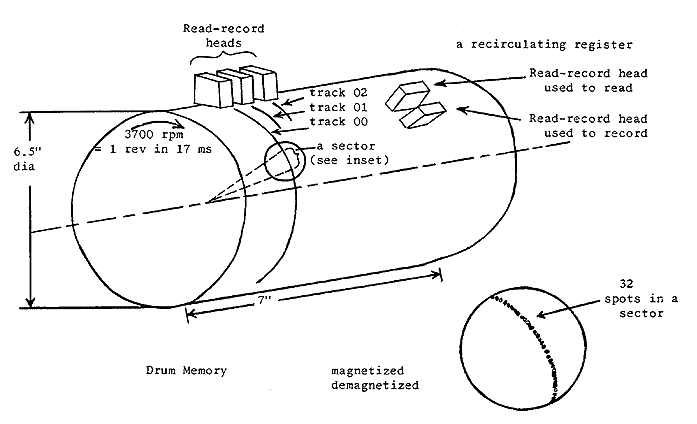
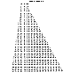
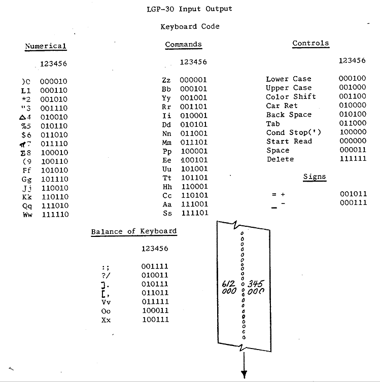
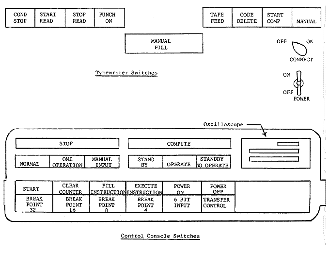
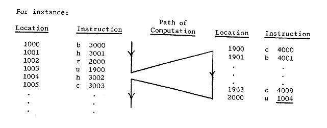

<!DOCTYPE HTML PUBLIC "-//W3C//DTD HTML 4.01 Transitional//EN">
<html xml:lang="en" lang="en"> 
<head> 
    <meta http-equiv="Content-Type" content="text/html; charset=utf-8"/> 
    <title>LGP - 30 PROGRAMMING MANUAL</title> 
</head>
<body>

<P>
<FONT SIZE=-1 color=red>
 
 
Go to <A HREF="on-line-docs.html">On Line Documents</A>,
Go to <A HREF="index.html">Go to Antique Computer home page</A>
</FONT>
</P>

<TABLE BORDER=1 align=center width=80% cellpadding=5 summary="Acknoledgment">
<TR><TD>
The following text was OCRed from a manual kindly sent 
by <A HREF="mailto:smillie@cs.ualberta.ca">
Professor Keith Smillie</A> of the University of Alberta, Edmonton, Alberta, Canada
to the Computer History Museum Center.
<DD>This version was corrected by Erwan HAMON (hamon.erwan@free.fr) who caught a superscript error.
</TD></TR>
</TABLE>

<HR>
<P>
<BR><BR>
<CENTER>
<H1>ROYAL PRECISION</H1>
<H2> Electronic Computer </H2>
<H2>LGP - 30 </H2>
<H2>PROGRAMMING MANUAL</H2>
<P>
Royal McBee Corporation
<P> Port Chester,  New York 
<P>April   1957
</Center>

<P>
<FONT SIZE=-1> Printed in the U.S.A</FONT>

<HR WIDTH=50%>
<CENTER>
CONTENTS
</CENTER>

<DL>
<DD><A HREF="#R1.00">What IS PROGRAMMING?</A>
<DD><A HREF="#R1.02">What type of computer is the LGP-30?</A> 
<DD><A HREF="#R1.03">Functional components of the LGP-30</A> 
<DD><A HREF="#R1.04">Why a stored program computer?</A>
<P>
<A HREF="#R2.00">MEMORY AND RECIRCULATING REGISTERS</A>

<DD><A HREF="#R2.01"> Memory drum </A>
<DD><A HREF="#R2.02"> Track </A>
<DD><A HREF="#R2.03"> Sector </A>
<DD><A HREF="#R2.04">Locations and addresses </A>
<DD><A HREF="#R2.05">Recirculating registers </A>
<DD><A HREF="#R2.06">Bit </A>
<DD><A HREF="#R2.07">Number words </A>
<DD><A HREF="#R2.08">Instruction words </A>
<DD><A HREF="#R2.09">Summary</A>
<P>
<A HREF="#R3.00">BUILDING A PROGRAM</A>

<DD><A HREF="#R3.01">  Instruction execution</A> 
<DD><A HREF="#R3.02">* Bring from memory </A>
<DD><A HREF="#R3.03">* M Multiply </A>
<DD><A HREF="#R3.04">* Add </A>
<DD><A HREF="#R3.05">* Hold and Store </A>
<DD><A HREF="#R3.06">* Stop</A>
<DD><A HREF="#R3.07"> Looping </A>
<DD><A HREF="#R3.08">* Unconditional transfer </A>
<DD><A HREF="#R3.09">Working storage </A>
<DD><A HREF="#R3.10">The counter </A>
<DD><A HREF="#R3.11">* Subtract </A>
<DD><A HREF="#R3.12">* Test</A>
<DD><A HREF="#R3.13">  Initializing </A>
<DD><A HREF="#R3.14">* Clear and store </A>
<DD><A HREF="#R3.15">Subroutines </A>
<DD><A HREF="#R3.16">* Return address</A> 
<DD><A HREF="#R3.17">Final program </A>
<DD><A HREF="#R3.18">* Store address </A>
<DD><A HREF="#R3.19">* Extract </A>
<DD><A HREF="#R3.20">* N Multiply </A>
<DD><A HREF="#R3.21">* Divide </A>
<DD><A HREF="#R3.22">** Print and Input </A>
<DD><A HREF="#R3.23">Summary</A>
<P>
<A HREF="#R4.00">NUMBER REPRESENTATION</A>
<DD><A HREF="#R4.01">Binary numbers </A>
<DD><A HREF="#R4.02">Binary arithmetic </A>
<DD><A HREF="#R4.03">Number conversion and scaling </A>
<DD><A HREF="#R4.04">M multiplication</A>
<DD><A HREF="#R4.05">Addition </A>
<DD><A HREF="#R4.06">Overflow </A>
<DD><A HREF="#R4.07">Truncation </A>
<DD><A HREF="#R4.08">Division</A>
<DD><A HREF="#R4.09">Negative number representation </A>
<DD><A HREF="#R4.10">Scaling example </A>
<DD><A HREF="#R4.11">Shifting</A>
<DD><A HREF="#R4.12">N multiplication </A>
<DD><A HREF="#R4.13">Hexadecimal digits </A>
<DD><A HREF="#R4.14">Scaling for range</A>
<DD><A HREF="#R4.15">Binary representation of orders</A>
<P>
<A HREF="#R5.00">INPUT OUTPUT AND CONTROL</A>
<DD><A HREF="#R5.01">Print </A>
<DD><A HREF="#R5.02">Input </A>
<DD><A HREF="#R5.03">Bootstrap </A>
<DD><A HREF="#R5.04">Turning power on </A>
<DD><A HREF="#R5.05">Control switches </A>
<DD><A HREF="#R5.06">Instruction representation </A>
<DD><A HREF="#R5.07">Filling the bootstrap </A>
<DD><A HREF="#R5.08">Executing the bootstrap </A>
<DD><A HREF="#R5.09">Program input routine </A>
<DD><A HREF="#R5.10">Executing a program </A>
<DD><A HREF="#R5.11">Calling for data </A>
<DD><A HREF="#R5.12">Filling the spacer </A>
<DD><A HREF="#R5.13">Using the typewriter </A>
<DD><A HREF="#R5.14">Reading the scope </A>
<DD><A HREF="#R5.15">Break points </A>
<DD><A HREF="#R5.16">Transfer control </A>
<DD><A HREF="#R5.17">Printing out</A>
<DD><A HREF="#R5.18">Turning power off</A>
<P>
<A HREF="#R6.00">SUMMARY OF ORDERS</A>
<DD><A HREF="#R6.01">Bring from memory</A> 
<DD><A HREF="#R6.02">Hold and Store </A>
<DD><A HREF="#R6.03">Clear and Store </A>
<DD><A HREF="#R6.04">Store address </A>
<DD><A HREF="#R6.05">Unconditional transfer </A>
<DD><A HREF="#R6.06">Return address </A>
<DD><A HREF="#R6.07">Test </A>
<DD><A HREF="#R6.08">Stop </A>
<DD><A HREF="#R6.09">Print </A>
<DD><A HREF="#R6.10">Input </A>
<DD><A HREF="#R6.11">Add </A>
<DD><A HREF="#R6.12">Subtract</A> 
<DD><A HREF="#R6.13">M Multiply </A>
<DD><A HREF="#R6.14">N Multiply </A>
<DD><A HREF="#R6.15">Divide </A>
<DD><A HREF="#R6.16">Extract</A>
<P>
<A HREF="#Table">Table of LGP-30 Specifications</A>
</DL>

<HR>

<P ID="R1.00">
<B>WHAT IS PROGRAMMING?</B>
<BR>
<BLOCKQUOTE>
Programming is planning how to solve a problem.  No matter what method is used
 -- pencil and paper, slide rule, adding machine, or computer -problem solving 
requires programming.  Of course, how one programs depends on the device one 
uses in problem solving.  Programming the Royal Precision LGP-30 is basically simple.  
Understanding certain problems requires special knowledge, however programming 
for the LGP-30 does not.  Hence this manual is meant for beginners as well as 
those with experience in stored program computers and describes completely the 
fundamentals of programming for the LGP-30.
<P>
Experienced programmers may find a reading of the summary of orders at the 
back of the manual sufficient.</BLOCKQUOTE>
<P>
<B>A Program for a Desk Calculator.</B>
<BR><I>Deleted as excessively confusing.</I>


<P ID="R1.02">
<B>What Type of Computer is the LGP-30?</B>
<BLOCKQUOTE>
The Royal Precision Electronic Computer LGP-30 is a general purpose electronic digital 
computer.  The phrase "general purpose" is intended to mean that the computer can solve 
to any required order of accuracy any mathematical problem expressable in numerical or 
logical terms.  However, for any given computer there are always some problems beyond 
its practical reach because of the length of time required for their solution.  
By "electronic" is meant simply that the device uses vacuum tubes and germanium 
diodes.  One way of classifying computers is by the terms analog and digital.
<P>
An analog computer measures while a digital computer counts.  The prototype of 
the analog machine is the slide rule or the automobile speedometer.  A digital 
computer works on the principle of the abacus or of the desk calculator.
<P>
There are other phrases, too, which help to classify the LGP-30.
<P>
The LGP-30 is (1) a fixed point machine.  In the desk calculator which we described, 
the decimal point is always understood to be at the right hand end of the keyboard 
and the accumulator.  So also in the LGP-30 there is a fixed location for the decimal 
point.  However, the LGP-30 is (2) a fractional machine.  That is, the point is 
understood to be at the left hand end of the accumulator, rather than at the 
right hand end.  Hence, all numbers must be scaled so that representation in 
the machine is in the range between -1 and +1.
<P>
However, scaling can always be accomplished by a program and need never be the 
concern of the operator or programmer.  Furthermore, the LGP-30 is (3) 
internally binary.   Instead of a digit from 0 to 9 in each position of 
the accumulator, it is only possible for either a 0 or I to be in each 
digit position of the accumulator.  One common device, which is both fractional 
and binary, is the ruler.  Suppose, for instance, we were to measure 13/16th 
of an inch.  We would note that we had a 1 an inch, a 1 of an inch, and a 1/16 
of an inch.  A simple representation of this process

of counting halves, quarters, eighths, etc., is as follows:
</P>
<CENTER>
<TABLE border=1 summary="-">
<TR>
<TD> 1/2's<TD>1/4's <TD> 1/8's <TD> 1/16's <TD> 1/32's  <TD>     etc.<TR>

<TD> .1   <TD>    1  <TD>   0  <TD>    1 <TD>    0  <TD>      0...
</TABLE>


                    or
<TABLE border=1 summary="-">
<TR>
<TD> .1101    <TD>    =  <TD>      13/16 <TR>
<TD> BINARY     <TD> = <TD>  DECIMAL FRACTION
</TABLE>
</CENTER>
Just as scaling can be handled by a program so also can conversion from binary to 
decimal so that the LGP-30 can be used as easily as any decimal computer.
<P>
The LGP-30 is (4) a stored program computer.  It is easy now to see that a 
problem requires not only the numbers to be operated on but also a set of 
instructions describing the sequence of operations; that is, a program. 
In the case of a stored program computer, not only can the numbers be stored, 
<B>but the instructions can also be stored.</B>
</BLOCKQUOTE>


<P ID="R1.03">
<B>Functional Components of the LGP-30.</B>
<BLOCKQUOTE>
There are four basic functional groupings of the components of the Royal Precision 
Electronic Computer LGP-30 which are necessary for problem solving. These functional 
groupings are:  The accumulator, the memory, the input-output system, and the control
 system.  Each of these have analogs in the case of the desk calculator.  For instance, 
the memory of the LGP-30 is equivalent in the desk calculator case to the paper 
required for storing initial data, intermediate results, and final results.  
An essential difference from the desk calculator, however, is that in the case 
of the LGP-30 the program itself is also stored in the memory.
<P>
The accumulator of the LGP-30 is entirely similar in function to the accumulator 
in the desk calculator.
<P>
In the case of the desk calculator, getting the results from our system is simply 
a matter of reading what is in the accumulator, or what we have written on paper.  
In the case of a stored program computer, however, the numbers to be operated on 
and the results are stored in the memory.  In the LGP-30 it is the input-output 
system which enables us to get numbers in and results out.
<P>
The control function is manual in the case of the desk calculator but is automatic in 
a stored program computer.  For instance, control in the desk calculator requires 
pressing the start button to execute each instruction, but in the stored program 
computer the control function provides for executing the program <B>either</B> one step 
at a time by pressing the start button for each instruction or all at once by 
pressing the start button just once for the entire program.
</BLOCKQUOTE>


<P ID="R1.04">
<B>Why a Stored Program Computer?</B>
<BLOCKQUOTE>
Since the desk calculator is a useful computer, the question arises, "What is the 
need for a stored program computer?"  The answer lies in the speed of computation.  
For instance, the stored program computer LGP-30 can execute over 400 additions 
per second, whereas the desk calculator can only execute approximately one addition 
per second, not counting the time required to enter the numbers into the keyboard.  
A table at the back of the manual shows the important physical and operational 
specifications of the Royal Precision electronic computer LGP-30.
<P>
Besides a comparison of the LGP-30 with desk calculators,  a comparison with other 
general purpose stored program computers is of interest.  The LGP-30 occupies less 
floor space, requires less power, has a simpler list of instruction types, has fewer 
components, and costs less than any other general purpose stored program computer 
now in use.  The LGP-30 has as large a memory, requires as few operators, is as fast, 
and is as easy-to program as any other, general purpose stored program computer now 
in its price range.
</BLOCKQUOTE>
<P>

We will cover in order:
<DL>
<DD>Memory and recalculating registers 
<DD>Building a program 
<DD>Number representation 
<DD>Input-output and control
</DL>


<P ID="R2.00">
<P ID="R2.01">
<P>
<B>MEMORY AND RECIRCULATING REGISTERS</B>
<BR>
<B>Memory Drum.</B> 
<BLOCKQUOTE>
 The heart of the memory section of the Royal Precision 
electronic computer LGP-30 is the magnetic drum shown below.  The drum is a 
metal cylinder 6.5 inches in diameter and 7 inches long.   It is coated with
 material which can be magnetized, and it rotates at approximately 3700 
revolutions per minute.
</BLOCKQUOTE>


<P ID="R2.02">
<B>Track.</B>  
<BLOCKQUOTE>
Read-record heads, which are for magnetizing and for detecting 
magnetization on the drum, are mounted in a frame around the drum.  Reading and 
recording on the drum are done in a manner somewhat different from that used to 
record on tape in tape recorders.  The read-record heads are spaced along the 
axis of the drum so that each one can record and read spots in a circle around 
the drum as the drum rotates.  There are 64 such circles and they are called tracks.
<P>
The use of 64 tracks and 64 read-record heads means that any given portion of 
the drum is available to a read-record head at least 64 times faster than if 
the memory consisted of a tape governed by one read-record head.
</BLOCKQUOTE>


<P ID="R2.03">
<B>Sector.</B> 
<BLOCKQUOTE>
 In each track there are 64 groups of spots.  Each group occupies 
a sector.  Each sector consists of 31 spots each of which can be magnetized or 
de-magnetized and a 32nd spot, called the spacer, which is always unaffected by 
recording and is never examined by reading.
</BLOCKQUOTE>


<P ID="R2.04">
<B>Locations and Addresses.</B>  
<BLOCKQUOTE>
There are 64 tracks and 64 sectors per track in 
the memory.  Hence every location in memory can be identified by a track and 
sector number and there are 64 x 64 = 4096 such locations.  Location numbering 
is generally by track and sector, tracks being numbered 00 through 63, sectors 00 through 63, 
and locations 0000 through 6363.  Note, however, that although there are 4096 locations, 
a location number such as 2089 is impossible with this numbering system since sectors 
number only through 63.  A location number is called an address.
<P>
<B>Access Time.</B>  Each sector of a given track is accessible for reading or 
recording by the head associated with the track of that location once per revolution.  
Since the drum rotates once every 17 milliseconds, each location is accessible once 
every 17 milliseconds.
</BLOCKQUOTE>


<P ID="R2.05">
<B>Recirculating Registers.</B>  
<BLOCKQUOTE>
In addition to the 64 tracks of memory on the drum, 
there are three tracks each of which contains a recalculating register. Each of 
these recalculating registers is one sector in length.  As the recalculating 
register passes under a read head, a record head continuously records the 
information read, back into the drum at a distance of one sector length from 
the read head.  The advantage of the recalculating register is a reduction of 
sector access time to the equivalent of one sector length or about .26 milliseconds, 
whereas, a location in memory has an access time equivalent to one track length or 
17 milliseconds.
<P>
The three recalculating registers are the accumulator, the instruction register, 
and the counter register.  The function of the accumulator should be clear from 
the discussion of the desk calculator.  The functions of the instruction register 
and the counter register are covered later.
<P>

<BR>
<CENTER>Fig. 1 - Schematic of LGP-30 drum</CENTER>
</BLOCKQUOTE>


<P ID="R2.06">
<B>Bit.</B> 
<BLOCKQUOTE>
 Each of the 31 spots in each sector on the drum can be in either of 
 two states: not magnetized or magnetized.  These two states may be interpreted as 
corresponding to 0 and 1
 which are the number system just as 0 through 9 are the digits of the decimal system.
<P>

The usefulness of a drum type computer depends on this correspondence between 
magnetized spots and binary digits.  It can be seen, then, that information can 
be stored on the drum in terms of binary numbers.  There is a binary digit, 
either 0 or 1, corresponding to the state of each spot on the drum.  The phrase 
"binary digit" is generally contracted to the word "bit".
<P>
The term "bit" is sometimes used to mean the spot on the drum as well as the 
binary digit which the spot represents.  Also the word bit is sometimes applied 
as meaning the digit I as opposed to the digit 0.  Although the LGP-30 operates 
in the binary number system, a program to convert from decimal to binary can be 
stored on the drum so that the LGP-30 is as convenient as any decimal computer.
</BLOCKQUOTE>


<P ID="R2.07">
<B>Number Words.</B>  
<BLOCKQUOTE>
The information stored in a memory location in terms of magnetized 
or de-magnetized spots is called a word.  A word can either be a number or, since this 
is a stored program computer, an instruction.  We will discuss here what a word looks 
like once it is in the memory and defer until later how to get words in and out of the LGP-30.
<P>
If a word is a number, it consists of 30 bits to represent magnitude, one bit related 
to sign representation, and a spacer bit.
<CENTER>
<PRE>
+-+-----------------------------------------------------------+-+
|0|1 0 1 0 0 0 0 1 0 1 1 0 1 0 1 0 1 1 1 0 0 0 0 0 1 0 0 1 1 1|0|
+-+-----------------------------------------------------------+-+
 ^                          ^                                  ^
 |                          |                                  |
sign bit            30 magnitude bits                     spacer bit 
                                                     (always 0 in memory)
</PRE>
</CENTER>


If a number is positive, the sign bit will be 0.  
If the number is negative the sign bit will be 1.
<P>
In the desk calculator example, the accumulator is ten decimal digits long, 
and hence can be used to represent numbers up to 10<SUP>lO</SUP> in magnitude.  
Since a word in the LGP-30 is thirty binary bits long, a number up to a 
magnitude of 2<SUP>30</SUP> can be represented in each word.  Note that 100 in the number 
system base 2 is 2<SUP>2</SUP> just as 100 in the number system base 10 is 10<SUP>2</SUP>.
 Hence, 1 followed by 30 0's in the binary system is equivalent to 2<SUP>30</SUP>. 
Since 2<SUP>30</SUP> is approximately equal to 10<SUP>9</SUP> in the decimal system, 
magnitudes of nine significant decimal digits can be represented in the LGP-30. 
 A discussion of binary arithmetic, representation, and scaling is covered later.
</BLOCKQUOTE>


<P ID="R2.08">
<B>Instruction Words.</B>  
<BLOCKQUOTE>
An instruction word consists of two parts, an order part 
and an address part.  For instance, the order part of the instruction
might represent the operation add.  The address part of the instruction represents, 
by track and sector, the location in memory of some number. For instance, <B>add 2000 </B>
is interpreted as meaning add the number located in track 20 sector 00 to the contents 
of the accumulator and store the result in the accumulator.  Note that <B>add 2000</B> means
 <B>add</B> number in location 2000, not add the number 2000.

<CENTER>
<PRE>

     -------------- bit numbers ----------------------------
   0 0 0 0 0 0 0 0 0 0 1 1 1 1 1 1 1 1 1 1 2 2 2 2 2 2 2 2 2 2 3 3 
  0 1 2 3 4 5 6 7 8 9 0 1 2 3 4 5 6 7 8 9 0 1 2 3 4 5 6 7 8 9 0 1
     -------------- bit values -----------------------------
  0 0 0 0 0 0 0 0 0 0 0 0 1 1 1 0 0 0 0 1 0 1 0 0 0 0 0 0 0 0 0 0
                         (-------)   (----------)(------------)
                         order bits   track bits     sector bits
                           = add         = 20           = 00
</PRE>
  <B>instruction word</B> = <B>a 2000</B>
</CENTER>
<P>


As indicated, bit positions 12 through 15 in a word are used to represent the order.  
Since 4 bits are used to represent the order, there are 24 or 16 possible orders in 
the LGP-30.  For instance, 1 110 in binary is interpreted as "add" if located in 
bit positions 12 through 15 of an instruction word.  Bit positions 18 through 23 
are used to represent track and bit positions 24 through 29 are used to represent sector.
<P>
Since there are six bit positions allowed for track, and six bit positions allowed 
for sector, 26 or 64 tracks and 26 or 64 sectors can be designated by the address 
part of an instruction word.
<P>

The computer has no way of knowing by examining the word itself, whether a word is 
intended as a number or an instruction.  Under most circumstances it is the numbers 
which are operated on and the instructions which are followed as instruction.  
The LGP-30 has the ability to operate on instructions as numbers. This ability 
is not only valuable but a feature which makes for the great power of stored 
program computers.  However, it is always to be avoided to use numbers as instructions. 
 Since an instruction word is indistinguishable from a number word, some means must 
be provided to avoid using numbers as instructions.  How this is accomplished is 
described under "BUILDING A PROGRAM".  Also, how we convert from a 2000 to the 
binary representation shown is discussed later.
</BLOCKQUOTE>


<P ID="R2.09">
<B>Summary.</B>  
<BLOCKQUOTE>
In summary, the essential element with which we deal in the computer 
is the word, and it may be either a number or an instruction. The next section 
discusses the orders of the LGP-30 and the effect they have on number representations 
in the computer.
</BLOCKQUOTE>

<!-- start page 12 -->


<P ID="R3.00">
<P>
<B>BUILDING A PROGRAM</B>
<BR>


<P ID="R3.01">
<B>Instruction Execution.</B>
<BLOCKQUOTE>
 We have learned that an instruction consists of two parts, 
an order part such as the letter a to designate "add" and an address part such as 2000 
to designate a memory location.
<P>
For instance, the instruction <B>a 2000</B> means add the number in location 2000 to 
the number in the accumulator and put the result in the accumulator. Let us see 
what the LGP-30 does to execute this instruction.
<P>
There are four phases to instruction execution.  First let us suppose that 
<B>a 2000</B> is in location 1000 and that the LGP-30 is ready to execute the instruction 
in location 1000.  The computer is ready to execute the instruction in location 
1000 when 1000 is in the counter register.  Hence, we are assuming that 1000 is 
in the counter register.
<P>
The first phase of execution is "search".  As the drum rotates, the LGP-30 searches 
for the address given by the counter register, in this case 1000.
<P>
The second phase is "transfer"   As location 1000 passes under the readrecord head 
of track 10, the LGP-30 places <B>a 2000</B> in the instruction register, but at the same 
time leaves <B>a 2000</B> undisturbed in location 1000.
<P>
The third phase is "search for operand".  The LGP-30 searches for location 2000.
<P>
The fourth phase is "completion".  The LGP-30 picks up the operand as location 2000 passes under the read-record head of track 20 and completes the operation according to the order part of the instruction.  In this case, it adds the operand to the contents of the accumulator and places the result in the accumulator.
<P>
Before execution of an instruction is complete, the LGP-30 adds 1 to the contents of the 
counter register.  Therefore, when execution of the instructions in 1000 is complete, 
the LGP-30 begins execution of the instruction in 1001.  Hence, the LGP-30 executes 
instructions in sequence according to memory location.  When the last instruction 
in a track is executed (for instance, the instruction in 2063), the instruction in 
sector 00 of the next track is executed because 2100 appears in the counter register.
<P>
Now we see how the LGP-30 executes a sequence of instructions.  How it <B>begins</B> executing 
a sequence and how it <B>stops</B> is covered in the following discussion of the orders.  
Later we will discuss what we have to do to store instructions in memory in the 
first place and how <B>a 2000</B> is converted into  binary representation.  For now we 
are going to discuss what orders and instructions do and how we can use them to 
build a program.
<P>
What orders do we need to evaluate the expression 
<DL>
<DD>(((a<SUB>0</SUB>x + a<SUB>1</SUB>)x + a<SUB>2</SUB>)x + a<SUB>3</SUB>) x+ a<SUB>4</SUB>
  ?  
</DL>
<br>
We said that four LGP-30 orders designated by b, m, a, and h (called bring, multiply, 
add, and hold) were sufficient.  To make from these orders the instructions necessary to 
evaluate the given expression, we need the address of some memory locations.
<P>
Hence let us assume that x, a<SUB>0</SUB>, a<SUB>1</SUB>, a<SUB>2</SUB>, 
a<SUB>3</SUB>, and a<SUB>4</SUB> are in locations 2000 through 2005 respectively.
</BLOCKQUOTE>


<P ID="R3.02">
<B>Bring From Memory.</B>
<BLOCKQUOTE>
  Now we can write an instruction such as <B>b 2001</B>.  
This means reset the accumulator to zero and add the number in 2001 
(in this case a<SUB>0</SUB>) to the contents of the accumulator.  
</BLOCKQUOTE>


<P ID="R3.03">
<B>M Multiply.</B>  
<BLOCKQUOTE>
The instruction <B>m 2000</B> means multiply the contents of the 
accumulator by the number in location 2000 and put the most significant half of the 
resulting product in the accumulator (in this case, a<SUB>0</SUB>x).  
In general, the multiplication of two numbers results in a product which has as 
many digits as the sum of the number of digits in the multiplier and the multiplicand. 
 For instance, if we multiply .20 by .10, we get .0200. Hence, if we interpret 
these operands as x = 2 at a scale factor f = 1 and a<SUB>0</SUB> = 1 at a scale factor 
f = 1 and if we retain only the significant half of the product, the result is
 a<SUB>0</SUB>x = 2 
at a scale factor f = 2.  Therefore by proper scaling, significance may be retained 
with the M multiply in keeping only the most significant half of the product.  
More about scaling later.
</BLOCKQUOTE>


<P ID="R3.04">
<B>Add.</B>
<BLOCKQUOTE>
  The instruction a 2002 means add the number in location 2002 to the 
contents of the accumulator and keep the result in the accumulator 
(in this case, a<SUB>0</SUB>x + a<SUB>1</SUB>).
</BLOCKQUOTE>


<P ID="R3.05">
<B>Hold &amp; Store.</B>  
<BLOCKQUOTE>
The instruction <B>h 2006</B> means store the contents of 
the accumulator in location 2006 and retain it also in the accumulator.
<P>
Now supposing we locate our program beginning in location 1000, we are equipped to 
write the following program notes.
</P>

<TABLE cellpadding=5 border=1 summary="Program">
<TR>
<TD> <B>Location    </B>
	<TD><B>Instruction</B>
	<BR>or Number 
		<TD><B> Operand </B>
			<TD><B> Result </B><TR>
<TD>1000        
	<TD><B> b 2001        </B>
		<TD>a<SUB>0</SUB>
			<TD> a<SUB>0</SUB> <TR>

<TD>1001 
	<TD><B> m 2000 </B>
		<TD> x  
			<TD> a<SUB>0</SUB>x <TR>

<TD>1002 
	<TD><B>  a 2002  </B>
		<TD> a<SUB>l</SUB> 
			<TD>  a<SUB>0</SUB>x + a<SUB>1</SUB> <TR>

<TD>1003
	<TD><B>  m 2000 </B>
		<TD> x  
			<TD>  (a<SUB>0</SUB>x + a<SUB>1</SUB>)x<TR>

<TD>1004 
	<TD><B>  a 2003 </B>
		<TD>  a<SUB>2</SUB> 
			<TD> (a<SUB>0</SUB>x + a<SUB>1</SUB>)x + a<SUB>2</SUB> <TR>


<TD>1005 
	<TD><B>  m 2000 </B>
		<TD> x 
			<TD>  ((a<SUB>0</SUB>x + a<SUB>1</SUB>)x + a<SUB>2</SUB>)x <TR>

<TD>1006 
	<TD><B>  a 2004 </B>
		<TD>  a<SUB>3</SUB>
			<TD> ((a<SUB>0</SUB>x + a<SUB>1</SUB>)x + a<SUB>2</SUB>)x + a<SUB>3</SUB> <TR>

<TD>1007
	<TD><B> m 2000 	</B>
		<TD>x	
	<TD> (((a<SUB>0</SUB>x + a<SUB>1</SUB>)x + a<SUB>2</SUB>)x + a<SUB>3</SUB>)x<TR>
<TD>1008
	<TD><B> a 2005 </B>
		<TD>a<SUB>4</SUB>
	<TD> (((a<SUB>0</SUB>x + a<SUB>1</SUB>)x + a<SUB>2</SUB>)x + a<SUB>3</SUB>)x 
	+ a<SUB>4</SUB>
 <TR>
<TD>1009
	<TD><B> h 2006 </B>
		<TD> Answer 
			<TD>  Store answer in 2006 
</TABLE>
<TABLE cellpadding=5 border=1 summary="Program">
<TR>
<TD> <B>Location    </B>
	<TD><B>Instruction
	<BR>or Number </B><TR>
<TD>2000	<TD>x        <TR>              

<TD>2001  <TD> a<SUB>0</SUB>    <TR>
<TD> 2002 <TD>  a<SUB>1</SUB>    <TR>
<TD>2003  <TD> a<SUB>2</SUB>    <TR>
<TD>2004 <TD> a<SUB>3</SUB>    <TR>
<TD>2005  <TD> a<SUB>4</SUB>    <TR>
<TD>2006 <TD> (answer)   
</TABLE>
<P>
We have now provided instructions which perform all of the functions in the solution of this problem: reset, add, multi]ply, and write.  
We have written the answer into a memory location,  however, and do not know what it is.  
Later we will discuss how to program so that our answer is printed out on the typewriter.
</BLOCKQUOTE>


<P ID="R3.06">
<B>Stop.</B>
<BLOCKQUOTE>
  In the desk calculator, computation requires pressing the start button 
to execute each instruction.  In the case of the LGP-30, however, pressing the start
 button may initiate the entire sequence of instructions. Hence, we need some method
 of instructing the computer to stop computation when we have accomplished what we desire.
<P>
The LGP-30 provides a stop order designated by the letter z.  Up to this point every 
instruction has implied an  address.  Actually, however, computation does not stop <B>to</B>
 any memory location;  it simply stops.  Hence, a stop instruction usually has the 
same effect regardless of the numbers in the address portion of the instruction. 
It is customary to write a stop instruction as <B>z 0000</B>.
</BLOCKQUOTE>


<P ID="R3.07">
<B>Looping.</B> 
<BLOCKQUOTE>
 The repetition of the group of two instructions, multiply and add, 
suggests a generalization of the program we have written.  Perhaps we could in some 
way use the same multiply and add instructions repeatedly instead of writing a 
sequence of several pairs of multiply and add instructions.  We require two additional 
types of functions to accomplish this:
<OL>
    <LI>  an instruction to transfer back to the multiply and add instruction and

     <LI>  a means of modifying the address in  the add instruction.
</OL>

<P>Since we have located the coefficients a<SUB>0</SUB> through a<SUB>4</SUB> in sequential memory locations, 
it will be useful to add 1 to the address portion of the add instruction before 
transferring back to the multiply and add instructions Let us consider program 
notes for the same expression as above which look as follows:
</P>

<TABLE cellpadding=5 border=1 summary="Program">
<TR>
<TD> <B>Location    </B>
	<TD><B>Instruction
	<BR>or Number </B>
		<TD><B> Operand </B>
			<TD><B> Result </B><TR>
<TD>1000        
	<TD><B> b 2000        </B>
		<TD>working storage
			<TD> initially zero <TR>
<TD>1001 
	<TD><B> m 2004 </B>
		<TD> x  
			<TD> . <TR> 
<TD>1002 
	<TD><B>  a (2005)  </B>
		<TD> a<SUB>n</SUB> 
			<TD>  initially a<SUB>0</SUB> <TR>
<TD>1003
	<TD><B>  h 2000 </B>
		<TD> .  
			<TD>  Intermediate and final answers into memory location 2000 <TR>
<TD>1004 
	<TD><B>  b 1002</B>
		<TD>  a ( )
			<TD> modify add instruction <TR>
<TD>1005 
	<TD><B>  a 2001 </B>
		<TD> 1 
			<TD>  " <TR>
<TD>1006 
	<TD><B>  h 1002 </B>
		<TD>  a ( )
			<TD> " <TR>
<TD>1007
	<TD><B> u 1000 	</B>
		<TD>.
			<TD> . 
</TABLE>

<TABLE cellpadding=5 border=1 summary="Program">
<TR>
<TD> <B>Location    </B>
	<TD><B>Instruction
	<BR>or Number </B><TR>
<TD>2000	<TD>working storage        <TR>              
<TD>2001  <TD> 1    <TR>
<TD> 2002 <TD>  not used    <TR>
<TD>2003  <TD> not used    <TR>
<TD>2004 <TD> x  <TR>
<TD>2005  <TD> a<SUB>0</SUB>    <TR>
<TD> 2006 <TD>  a<SUB>1</SUB>    <TR>
<TD>2007  <TD> a<SUB>2</SUB>    <TR>
<TD>2008 <TD> a<SUB>3</SUB>    <TR>
<TD>2009  <TD> a<SUB>4</SUB>    


</TABLE>
<P>
Note that after executing the add instruction for the first time we write into memory 
our first intermediate result, a<SUB>0</SUB>.  The following three instructions bring,
 add, and hold change the add instruction from <B>a 2005</B> to <B>a 2006</B>. 
 Hence, we note that
 address modification has not required any new type of order.
</BLOCKQUOTE>


<P ID="R3.08">
<B>Unconditional transfer.</B>
<BLOCKQUOTE>
  However, transfer back to the multiply instruction does 
require a new order.  For this the LGP-30 provides an unconditional transfer order 
designated by the letter <B>u</B>. An instruction such as <B>u 1000</B> means execute 
next the instruction in location 1000.  Each repetition of the sequence preceding the 
<B>u</B> instruction is called an iteration.  It should be noted that a <B>u</B>
 instruction does not affect the contents of the accumulator.  So far the only other 
instruction of this nature is the stop instruction.
<P>
Now we have an answer to the question "How do we start and stop a sequence of 
instruction?"  A <B>u</B> instruction transfers computation to the beginning of a 
sequence and a <B>z</B> instruction stops computation at the end of a sequence.  
Later we will describe how to use the typewriter and control console to execute 
the proper <B>u</B> instruction to begin executing a program once it is stored in memory.
<P>
We also have an answer to the question "How do we avoid executing numbers as instructions?" 
  Since instructions are executed in sequence and since we have means of starting and 
stopping any sequence, we can avoid any sequence of memory locations where numbers are 
stored.
</BLOCKQUOTE>


<P ID="R3.09">
<B>Working storage.</B> 
<BLOCKQUOTE>
 Besides transfer and address modification, there are two 
other ideas in our new program worth noting.  First, the initial bring instruction 
when first executed does not bring a<SUB>0</SUB> but brings the contents of 2000
 which is zero.  The reason is this:  after executing the multiply and add pair, 
we must store the result each time because we need to make use of the accumulator 
in modifying the address of the add instruction. Having stored the intermediate 
result each time we have to bring it again after we transfer to the beginning. 
 Since we want to avoid bringing a<SUB>0</SUB> after the  first  time  and need 
to bring the  intermediate  result,  we provide a special memory location for 
storing intermediate results and find another method for bringing a<SUB>0</SUB> initially. 
 Since the add instruction initially has the address of a<SUB>0</SUB> and the contents of 
working storage is initially zero. the effect of the first execution of the add 
instruction is to bring a<SUB>0</SUB>.
<P>
A second idea we need to mention is that the 1 we add to the instruction in location 
1002 must increase the sector by one each time.  Hence, according to the diagram 
of an instruction word which appeared earlier, the number in location 2001 must 
have a one in position 29 but otherwise have all zeroes.
<P>
Locations 2002 and 2003 we did not use so that they would be available for 
certain modifications we will later make to the program.
</BLOCKQUOTE>


<P ID="R3.10">
<B>The Counter.</B>  
<BLOCKQUOTE>
You probably notice  several things wrong with the program 
as it stands.  The principal fault is that there is no way of controlling when 
it stops.  After the instruction in 1002 becomes <B>a 2009</B>, it becomes a 2010 and 
so on indefinitely.  Numbers in locations following 2009 are added into the result, 
which we do not want.  Two additional orders are helpful in controlling the number
 of iterations executed.  These orders are "subtract" and "test".
</BLOCKQUOTE>


<P ID="R3.11">
<B>Subtract.</B>  
<BLOCKQUOTE>
The instruction <B>s 2003</B> means subtract the number in 
location 2003 from the contents of the accumulator and  keep the result in the 
accumulator.
</BLOCKQUOTE>


<P ID="R3.12">
<B>Test.</B> 
<BLOCKQUOTE>
 The instruction <B>t 1000</B> means that if the number in the accumulator 
is negative, transfer to location 1000 and if the number in the accumulator
is zero or positive, execute the instruction following <B>t 1000</B>.
<P>
Let us consider the following sequence of instructions:
</P>

<TABLE cellpadding=5 border=1 summary="Program">
<TR>
<TD> <B>Location    	</B><TD><B>Instruction<BR>or Number </B><TD><B> Operand </B><TD><B> Result </B><TR>
<TD>1007	<TD><B> b 2002	</B><TD>counter		<TD> . <TR>
<TD>1008 	<TD><B> a 2001 </B><TD> 1 	<TD> argument counter <TR> 
<TD>1009 	<TD><B>  h 2002  		</B><TD> counter 	<TD>  store augmented counter<TR>
<TD>1010	<TD><B>  s 2003 		</B><TD> 5  		<TD>  flag <TR>
<TD>1011 	<TD><B>  t 1000		</B><TD>  .		<TD> tests number if iterations<TR>
<TD>1012 	<TD><B>  z 000		</B><TD> . 		<TD> stops program <TR>
<TD>2001 	<TD> 1 at 29		<TD>  .		<TD> . <TR>
<TD>2002	<TD> working storage	<TD>.			<TD> counter initially zero <TR>
<TD>2003	<TD> 5			<TD>.			<TD> flag 
</TABLE>

<P>
The first iteration brings zero, adds one, holds one subtracts 5 to leave -4 in 
the accumulator, and transfers.  The second iteration leaves -3 in the accumulator
 before testing and so on until the last iteration leaves zero and the result of 
the test instruction is to go to the stop instruction in 1012.  In this case, the
 sequence of instructions not shown (from 1000 to 1007) is executed 5 times before 
testing out.
<P>
Since the preceding program required modification of the add instruction in 1002 by one
for each iteration, we might use the add instruction itself as the counter.
Then out program notes look as follows:
</P>

<TABLE cellpadding=5 border=1 summary="Program">
<TR>
<TD> <B>Location    	</B><TD><B>Instruction<BR>or Number </B><TD><B> Operand </B><TD><B> Result </B><TR>
<TD>1004	<TD><B> b 1002	</B><TD>a( ) as counter		<TD> . <TR>
<TD>1005	<TD><B> a 2001	</B><TD>1 at 29		<TD> augment counter <TR>
<TD>1006	<TD><B> h 1002	</B><TD>a( )		<TD> store augmented counter <TR>
<TD>1007	<TD><B> s 2003	</B><TD>a 2010		<TD> flag <TR>
<TD>1008 	<TD><B> t 1000 	</B><TD> . 	<TD> tests number of iterations <TR> 
<TD>1009 	<TD><B>  z 0000  		</B><TD> . 	<TD>  stops program<TR>
<TD>2001 	<TD> 1 at 29		<TD>  .		<TD> . <TR>
<TD>2002	<TD> working storage	<TD>.			<TD> counter initially a 2005 <TR>
<TD>2003	<TD> a 2010			<TD>.			<TD> flag 
</TABLE>


<P>
The question usually arises, "Given a certain initial value of counter and augmenting by 
1 sector each time, how do we determine what to have for a flag?"'  Note that the add 
instruction in 1002 is augmented after execution and before testing. Hence, it is 
augmented after execution the last time and the flag should have an address larger 
by one than the address of the last add instruction to be executed.
<P>
This last sequence for controlling iterations permits us to execute the preceding 
multiply-add pair exactly 5 times, which is the number of times required since we 
must add in the five coefficients 3.0 through 3.4.
</BLOCKQUOTE>


<P ID="R3.13">
<B>Initializing.</B> 
<BLOCKQUOTE>
 There are <B>still</B> faults with the program.  If we execute 
the computation a second time, we obtain a different answer.  For one thing, when 
computation begins the second time, the contents of the working storage location 
2000 contains the final answer and not zero.  For another, the counter and initial 
add instruction is <B>a 2010</B> not <B>a 2005</B>.  We must provide instructions 
to precede those we have written which set correct initial values in both of these 
locations.  If we store the instruction <B>a 2005</B> in 2002 and a zero in 2010, the 
following four instructions are sufficient to properly <B>initialize</B> our program.

<DL>
<DD><B>b 2002</B> 
<DD><B>h 1002</B> 
<DD><B>b 2010</B> 
<DD><B>h 2000</B>
</DL>

</BLOCKQUOTE>


<P ID="R3.14">
<B>Clear and Store.</B>
<BLOCKQUOTE>
  The LGP-30 provides a clear order which can make this 
initialization even simpler.  The instruction <B>c 1002</B> means replace the contents of 
memory location 1002 with the contents of the accumulator and replace the contents 
of the accumulator with zero.  Now the initializing instructions can be reduced to:

<DL>
<DD><B>b 2002</B> 
<DD><B>c 1002</B> 
<DD><B>h 2000</B>
</DL>

<P>
The use of the clear instruction reduces the number of instructions by one and eliminates 
the need for storing a zero because the use of a clear instead of a hold to store the 
initial add instruction leaves a zero accumulator.
</BLOCKQUOTE>


<P ID="R3.15">
<B>Subroutines.</B> 
<BLOCKQUOTE>
 A subroutine is a program which computes a frequently needed 
function such as the square root or the printing out of a number in the accumulator.  
The word "routine"  simply means "program" and the prefix "sub-" simply reflects the 
fact that the evaluation of a function such as the square root is often needed as a 
subordinate part of a larger program. Subroutines are frequently retained in known 
locations in memory so that they may easily be used when needed.
<P>
In the case of our present program we have need of a print-out subroutine so that 
the final  result stored in location 2000 can be printed out. Suppose we locate the 
printout subroutine in locations 3000 through 3050. We can easily transfer to the 
subroutine by executing a <B>u 3000</B> instruction. The question arises, however, 
"How can we easily return for more computation to the sequence of locations where 
we have stored the program of which the subroutine is a part?"
</BLOCKQUOTE>


<P ID="R3.16">
<B>Return address.</B> 
<BLOCKQUOTE>
 The answer is provided by the return address order.  If
the instruction <B>r 3050</B> is located in 1013, it stores the address 1015
in location 3050.
<P>
If the instruction <B>u 0000</B> is located in 3050, it becomes <B>u 1015</B>.  Hence
if we have
<P>
<!--<PRE>-->
<DL>
<DD>1012 	<B>b 2000</B>
<DD>1013 	<B>r 3050</B>
<DD>1014 	<B>u 3000</B>
<DD>1015	<B>z 0000</B>
</DL>
<!--</PRE>-->
<P>
we bring the answer to the accumulator, set up a return transfer instruction, 
transfer to the beginning of the printout subroutine in 3000, execute the printout 
routine, transfer back to 1015, and stop.  Refer to the LGP-30 Subroutine Manual 
to see how various subroutines are programmed.
</BLOCKQUOTE>


<P ID="R3.17">
<B>Final Program.</B>
<BLOCKQUOTE>
<P>Now we can write a program to evaluate 
(((a<SUB>0</SUB>x + a<SUB>1</SUB>)x + a<SUB>2</SUB>)x + a<SUB>3</SUB>)x 
	+ a<SUB>4</SUB>

which incorporates all the devices we have learned to this point.
</P>

<TABLE cellpadding=5 border=1 summary="Program">
<TR>
<TD> <B>Location        </B><TD><B>Instruction<BR>or Number </B><TD><B> Operand </B><TD><B> Result </B><TR>
<TD>1000	<TD><B> b 2002  </B><TD>a 2005		<TD> initial add instruction <TR>
<TD>1001	<TD><B> c 1005  </B><TD>.			<TD> . <TR>
<TD>1002	<TD><B> h 2000  </B><TD>zero		<TD> initialize working storage <TR>
<TD>1003	<TD><B> b 2000  </B><TD>working storage	<TD> . <TR>
<TD>1004	<TD><B> m 2004  </B><TD>x			<TD> . <TR>

<TD>1005	<TD><B> a(2005) </B><TD>a<SUB>n</SUB>		<TD> . <TR>
<TD>1006	<TD><B> h 2000  </B><TD>working storage	<TD> intermediate and final results <TR>
<TD>1007	<TD><B> b 1005  </B><TD>a(2005 + n)		<TD> . <TR>
<TD>1008 	<TD><B> a 2001  </B><TD> 1 at 29	<TD> . <TR> 
<TD>1009 	<TD><B> h 1005      </B><TD> a(2005 + n+1) 	<TD>  .<TR>

<TD>1010	<TD><B> s 2003  </B><TD>a 2010		<TD> flag <TR>
<TD>1011	<TD><B> t 1003  </B><TD>.			<TD> . <TR>
<TD>1012	<TD><B> h 2000  </B><TD>final result	<TD> . <TR>
<TD>1013	<TD><B> r 3050  </B><TD>.			<TD> . <TR>
<TD>1014	<TD><B> u 3000  </B><TD>print routine	<TD> . <TR>

<TD>1015	<TD><B> z 000   </B><TD>.			<TD> stop <TR>

<TD>2000	<TD>working storage        <TR>
<TD>2001 	<TD> 1 at 29	 <TR>
<TD>2002	<TD> a 2005	 <TR>
<TD>2003	<TD> a 2010			 <TR>
<TD>2004 <TD> x  <TR>

<TD>2005  <TD> a<SUB>0</SUB>    <TR>
<TD> 2006 <TD>  a<SUB>1</SUB>    <TR>
<TD>2007  <TD> a<SUB>2</SUB>    <TR>
<TD>2008 <TD> a<SUB>3</SUB>    <TR>
<TD>2009  <TD> a<SUB>4</SUB>    


</TABLE>

<P>
Aside from the four instructions required for printout, this program is two steps 
longer than the original program consisting of b, m, a, m, a, m, a, m, a, h 
instructions and requires the use of three additional storage locations.
<P>
Nevertheless, we have gained something, for we now have a program capable of 
evaluating the more general expression

<DL>
<DD><PRE>(. . .(a<SUB>0</SUB>x + a<SUB>1</SUB>)x + . . .a<SUB>n-1</SUB>)x +  a<SUB>n</SUB></PRE>
</DL>

<P>
All we need to supply each time are a value for x and the coefficients a<SUB>0</SUB>
 through an and a value for the flag equal to <B>a(2006 + n)</B>.  Note that, although more 
storage space is required for more coefficients, the number of instructions in our 
program is constant regardless of the size of n. That we can achieve such a program 
shows the great power of the LGP-30 and of stored program computers generally.
<P>
Although we have been able to build a respectable program, there are several orders 
provided by the LGP-30 which we have not used.
</BLOCKQUOTE>


<P ID="R3.18">
<B>Store address.</B> 
<BLOCKQUOTE>
 Suppose we have a problem in which we wish to square all the 
numbers stored in track 20 and store each square in the location formerly occupied 
by the number.  We might write a program to appear as follows:
<PRE>
Location	Instruction		Operand	Notes

1000 		b(2000)		x 
1001 		m(2000)		x 
1002 		h(2000)		x2		x2
1003 		b 1000		b(2000+n)
1004 		a 1015		1 at 29 
1005 		h 1000		b(2001+n)
1006 		b 1001		m(2000+n)
1007 		a 1015		1 at 29
1008 		h 1001		m(2001+n)
1009 		b 1002		h(2000+n)
1010 		a 1015		1 at 29
1011 		h 1002		h(2001+n)
1012 		s 1016		h 2100	flag
1013 		t 1000				 loop
1014 		z 0000				stop
1015 		1 at 29				augmenter
1016 		h 2100				flag
</PRE>
<P>
This program can be greatly simplified by the use of the store address order.  
The instruction y 1000 means replace the contents of the address portion of the 
word in location 1000 with the contents of the address portion of the word in 
the accumulator.  The contents of the accumulator is unaffected.  Hence we can 
rewrite the program as follows:
<PRE>
Location	Instruction 	Operand	Results or
		or number				  notes
1000		b(2000) 		x
1001 		m(2000)		x		x<SUP>2</SUP>
1002 		h( 2000)		x<SUP>2</SUP>
1003 		b 1000		b(2000 + n)
1004		a 1011		1 at 29
1005		h 1000				Counter and augmented
							instruction
1006		y 1001
1007		y 1002
1008		s 1012		b 2100	flag
1009		t 1000	
1010		z 0000				stop
1011		1 at 29
1012		b 2100		flag
</PRE>

We have been able to shorten the program by 4 steps because each y instruction 
takes the place of the b, a, h sequence.  A y instruction can put the same address 
into instructions which have different orders.
</BLOCKQUOTE>


<P ID="R3.19">
<B>Extract.</B> 
<BLOCKQUOTE>
 More than one kind of data may be stored in a given word.  
For instance, a calendar date consists of three types of data: month, day an 
year.  A word with these three types of data might look this way.
<PRE>
  +-+---------------------------------------------------------+
  |0|1 1 0 0 0 0 1 1 1 1 1 1 1 0 0 1 0 1 0 0 0 0 0 0 0 0 0 0 0|
  +-+---------------------------------------------------------+
    (month  )( day    )(   year         )
</PRE>

Sometimes it is desirable to deal with only one of the three pieces of data.  
The extract order makes it possible to separate different data stored in one word. 
 The instruction e 2000 means: put zeroes in the wore in the accumulator wherever 
there are zeroes in the word in location 200( but otherwise leave the word in the 
accumulator unchanged.  For instance; if the above data word is in the accumulator 
and in location 2000 is the word
<PRE>
  +-+---------------------------------------------------------+
  |1|1 1 1 1 0 0 0 0 0 0 0 0 0 0 0 0 0 0 0 0 0 0 0 0 0 0 0 0 0|
  +-+---------------------------------------------------------+
    (month  )
</PRE>
then the result in the accumulator is the following word which contains only the month 
part of the date.
<PRE>
  +-+---------------------------------------------------------+
  |0|1 1 0 0 0 0 0 0 0 0 0 0 0 0 0 0 0 0 0 0 0 0 0 0 0 0 0 0 0|
  +-+---------------------------------------------------------+
    (month  )
</PRE>

The word in location 2000 is called the extract mask.  It is possible with another extract 
instruction and mask to retain the day and not the month or the year, or to retain any 
part of any given word in the accumulator. The extract order achieves its result by 
multiplying bits in corresponding positions of the extract mask and the accumulator. 
 That is, if there is a one in position 29 of both words, there is a one in position
 29 of the result; otherwise, there is a zero.
</BLOCKQUOTE>


<P ID="R3.20">
<B>N multiply.</B>  <BLOCKQUOTE>
The instruction n 2000 means multiply the contents of the accumulator 
by the contents of location 2000 and retain the least significant half of the product 
in the accumulator.  The N multiply and the divide order which follows are both 
discussed further in connection with binary representation.
</BLOCKQUOTE>

                                  <!-- 22 -->


<P ID="R3.21">
<B>Divide.</B>  
<BLOCKQUOTE>
The instruction d 2000 means divide the contents of the accumulator 
by the contents of location 2000 and retain the rounded quotient in the accumulator.
</BLOCKQUOTE>


<P ID="R3.22">
<B>Print and Input.</B>
<BLOCKQUOTE>
  Both the print and input orders are discussed under 
input output and control.
</BLOCKQUOTE>


<P ID="R3.23">
<B>Summary.</B> 
<BLOCKQUOTE>
 There are 16 orders available for constructing instructions in 
the LGP-30.  An instruction contains an order part such as the letter a for add
 and an address part such as 2000.  It must be emphasized that 2000 in the 
instruction a 2000 is the location of a number stored in memory and not the 
number itself.  Further properties of the m, n, d, a, and s orders are discussed 
in connection with binary representation, but a summary of the properties of each 
order can be found all in one place at the back of the manual.
</BLOCKQUOTE>


<!--  end of page 22 -->


<P ID="R4.00">
<B>NUMBER REPRESENTATION</B>


<P ID="R4.01">
<B>Binary Numbers.</B> 
<BLOCKQUOTE>
 Just as a number system can be developed using the ten digits 
0 through 9, so also a number system can be developed using only the two digits 0 and 1. 
 This number system is called the binary system In counting with the decimal system,  
when the digits 0 through 9 have been used in the low order position, a one is placed 
to the left of the low order position and counting continues with 10, 11, 12, etc.  
In the counting with the binary system we also first use all the digits in the low 
order position and then place a one to the left of the low order position so that 
counting goes 0, 1, 10, 11, etc.  The binary numbers equivalent to the decimal 
digits are as follows:
<PRE>
Decimal digit 	Binary number 
	0	0000
	1	0001
	2	0010
	3	0011
	4	0100
	5	0101
	6	0110
	7	0111
	8	1000
	9	1001
</PRE>

Number representation can be looked on as an efficient method of counting. That is, 
we need just the ten digits, not as many digits as the magnitude of number we wish 
to represent, because the digit to the left of the low order position represents 
the number of 10's.  For instance, the number 1,234 is

<DL>
<DD>	(1 x 10<SUP>3</SUP>) + (2 x 10<SUP>2</SUP>) + (3 x 10<SUP>1</SUP>) + (4 x 10<SUP>0</SUP>)
</DL>
<P>
similarly in the binary system the number 1101 means

<DL>
<DD>	(1 x 2<SUP>3</SUP>) + (1 x 2<SUP>2</SUP>) + (0 x 2<SUP>1</SUP>) + (1 x 2<SUP>0</SUP>)
</DL>
<P>
      

(where the digits are decimal).
<P>
Sometimes it is useful to use a subscript to identify what number system a given 
expression is in, especially where different number systems use some of the same 
symbols for digits.  For instance, 11012 = 1310; that is, 1101 in binary is equal 
to 13 in decimal not one thousand one hundred one. It is worthwhile pointing out that
<PRE>
	10<SUB>10</SUB> = 10<SUP>1</SUP>	10<SUB>2</SUB> = 2<SUP>10</SUP>
	100<SUB>10</SUB> = 10<SUP>2</SUP>	100<SUB>2</SUB> = 4<SUP>10</SUP>
	1000<SUB>10</SUB> = 10<SUP>3</SUP>	1000<SUB>2</SUB> = 8<SUP>10</SUP>
</PRE>
</BLOCKQUOTE>


<P ID="R4.02">
<B>Binary Arithmetic.</B> 
<BLOCKQUOTE>
 Arithmetic in the binary system is similar to arithmetic in the 
decimal system.

<DL>
<DD>a.  The rules for addition are
</DL>
<PRE>
	1. 0 + 0=0 
	2. 1 + 0 = 1
	3. 1 + l= 10 (0 with 1 carried)
</PRE>
As an example the sum of the two numbers 1011001 and 1001010 is
<PRE>
	Carries 1 0 1 1 0 0 0 
	          1 0 1 1 0 0 1 
		  1 0 0 1 0 1 0 
		  -------------
		1 0 1 0 0 0 1 1
</PRE>
<DL>
<DD>b.  The rules for subtraction are:
</DL>
<PRE>
	1. 0 - 0 = 0 
	2. l - l = 0 
	3. l - 0 = l
	4. 0 - l = l (with one borrowed)
</PRE>
As an example the difference of the two numbers 11001011 and 1010110 is
<PRE>
	Borrows      1 1 0 1
		     1 1 0 0 1 0 1 1 
		     - 1 0 1 0 1 1 0
                ------------------
     Difference      O 1 1 1 0 1 0 1
</PRE>
<DL>
<DD>c.  The multiplication table for binary digits is
</DL>
<PRE> 
	1. 0 x 0 = 0 	
	2. l x 0 = 0 
	3. l x l = l
</PRE>
The rules for multiplication and division in longhand are exactly the same as the rules 
in the decimal system.  For example the multiplication of 1.011 by 0.110 is
<PRE>
	        1. 0 1 1 
	        0. 1 1 0 
		----------
	        0  0 0 0 
	      1 0  1 1
	    1 0 1  1
	  0 0 0 0
	-----------------
	 1. 0 0 0  0 1 0
</PRE>
To facilitate the handling of the binary point in binary arithmetic, most computers are 
constructed so that the binary point is fixed either to the left of the most significant 
digit or to the right of the least significant digit.
<P>
The LGP-30 is designed to operate on numbers with the binary point left of the most 
significant digit.  Numbers held in the computer are then represented as fractional 
quantities with the range of magnitude from +1 to -1.
</BLOCKQUOTE>


<P ID="R4.03">
<B>Number Conversion and Scaling.</B> 
<BLOCKQUOTE>
 Let us consider how we might represent the decimal 
number 19 in the LGP-30.  First of all, let us convert 19 into binary.  To do this we 
first find the largest number representable by a power of 2 which is equal to or smaller 
than 19.-  The number in this case is 24 or 16, or in binary, 10000.  Conversion is 
easier to visualize if we represent the binary number as

<DL>
<DD>(1 x 2<SUP>4</SUP>) + (0 x 2<SUP>3</SUP>) + (0 x 2<SUP>2</SUP>) + (0 x 2<SUP>1</SUP>) + (0 x 2<SUP>0</SUP>)
</DL>
<P>

With respect to the remainder 19-16 = 3, 21 is the largest power of 2 equal to or less 
than 3.  Now we can write a binary representation of 18 based on the fact that it is 
the sum of numbers which are integral powers of 2.  That is, 18 = 24+21 = 16+2, which 
in binary is 10010 or

<DL>
<DD>(1 x 2<SUP>4</SUP>) + (0 x 2<SUP>3</SUP>) + (0 x 2<SUP>2</SUP>) + (1 x 2<SUP>1</SUP>) + (0 x 2<SUP>0</SUP>)
</DL>
<P>
By this time it should be easy to see that 19 in decimal is equivalent to 10011 in binary.

<P>
Now that we have converted  
the number we chose into binary, we need to since the LGP-30 is a fractional machine. 
We can do this by shifting the
number far enough right with respect to the places gives .10011 for the representation. 
Note that 5 is the smallest number of places we could shift right and still have a 
fraction. We keep track of shifts by the scale factor q.
In this case, we say we have 19 at q = 5.  In a memory location the number
word would appear as

<PRE>
  +-+---------------------------------------------------------+
  |0|1 0 0 1 1 0 0 0 0 0 0 0 0 0 0 0 0 0 0 0 0 0 0 0 0 0 0 0 0|
  +-+---------------------------------------------------------+
   ^^         ^
   ||         |
   ||         + scaled binary point  
   |+ binary point
   +sign bit
               q = 5
</PRE>


If the number we wish to represent is small enough, it is possible  to represent it at
 a negative q.  For instance, 1/8 decimal is equivalent to 0.001 in binary and 0.1
 in binary is 1/8 at q = -2.  In this case we moved the number two places to the 
left with respect to the binary point.
<P>
In spite of the fact we have given some attention to converting a number here, 
the LGP-30 can be programmed to do all such conversion so that the operator may 
use it as a decimal computer.
</BLOCKQUOTE>


<P ID="R4.04">
<B>M multiplication.</B>  
<BLOCKQUOTE>
Suppose we consider multiplying 2 and 3.  In binary 

2 is 10 and 3 is 11.  Each can be represented in the LGP-30 at a binary scale factor q = 2.  
Hence 2 at q = 2 is  .10 and 3 at q = 2 is  .11
<P>
When we multiply, scale factors add.  The result, then, is 6 at q = 4, 
which in binary is .0110.  The  appearance of the operands and the result 
of an M multiply in the LGP-30 are as follows: In the accumulator
<PRE>
  +-+---------------------------------------------------------+
  |0|1 1 0 0 0 0 0 0 0 0 0 0 0 0 0 0 0 0 0 0 0 0 0 0 0 0 0 0 0|
  +-+---------------------------------------------------------+
</PRE>
 

In memory
<PRE>
  +-+---------------------------------------------------------+
  |0|1 0 0 0 0 0 0 0 0 0 0 0 0 0 0 0 0 0 0 0 0 0 0 0 0 0 0 0 0|
  +-+---------------------------------------------------------+
</PRE>

Result in the accumulator
<PRE>
  +-+---------------------------------------------------------+
  |0|0 1 1 0 0 0 0 0 0 0 0 0 0 0 0 0 0 0 0 0 0 0 0 0 0 0 0 0 0|
  +-+---------------------------------------------------------+
</PRE>
</BLOCKQUOTE>


<P ID="R4.05">
<B>Addition.</B>  
<BLOCKQUOTE>
 If we add 2 and 3 each at q = 2, the result is 5 at q = 2 
which in binary is 1.01.  Since this number is not fractional, it cannot be 
held in the LGP-30.  Hence, although a q = 2 was sufficient for <B>multiplication</B> 
of 2 and 3, 3 is the minimum q for <B>adding</B>  2 and 3.  Numbers can be added only 
if they are at the same q.
</BLOCKQUOTE>


<P ID="R4.06">
<B>Overflow.</B>  
<BLOCKQUOTE>
When addition results in a number too large for the LGP-30, 
we say computation overflows.  The result is that the machine stops computing 
at the add order.  Overflow can occur as the result of subtraction when numbers 
of opposite signs are the operands.  Overflow due to division can also occur.  
Multiplication can never result in overflow since the multiplication of fractions 
can never result in a number as large as 1.
</BLOCKQUOTE>


<P ID="R4.07">
<B>Truncation.</B> 
<BLOCKQUOTE>
 An M multiply, however, has another characteristic worth noting.  
Suppose we multiply 3 at q = 30 by 2 at q = 2.  The result should be 6 at q = 32.

In the accumulator
  <PRE>
  +-+---------------------------------------------------------+
  |0|0 0 0 0 0 0 0 0 0 0 0 0 0 0 0 0 0 0 0 0 0 0 0 0 0 0 1 1 0|
  +-+---------------------------------------------------------+
</PRE>


In memory
  <PRE>
  +-+---------------------------------------------------------+
  |0|1 0 0 0 0 0 0 0 0 0 0 0 0 0 0 0 0 0 0 0 0 0 0 0 0 0 0 0 0|
  +-+---------------------------------------------------------+
</PRE>


Result in the accumulator

  <PRE>
  +-+---------------------------------------------------------+
  |0|0 0 0 0 0 0 0 0 0 0 0 0 0 0 0 0 0 0 0 0 0 0 0 0 0 0 0 1 0|
  +-+---------------------------------------------------------+
</PRE>
<P>

The result is 4 at q = 32 instead of 6 at q = 32.  In other words, part of the result 
has been lost because the word length is 30 bits.  This type of error is called 
truncation error and can be minimized by carrying operands for multiplication at 
as small a q as possible.
<P>
In general then, it is desirable to carry numbers at as high a q as possible to 
avoid overflow and at as small a q as possible to avoid truncation errors.
</BLOCKQUOTE>


<P ID="R4.08">
<B>Division.</B>
<BLOCKQUOTE>
  Suppose we divide 3 at q = 2 by 2 at q = 2.  The result is 1.5 at 
q = 0 since the q of a quotient is the  q of the dividend minus the q of the divisor.  
This result in binary is 1.1, which is too large for the machine to hold.  In this case, 
too, we have an overflow and the LGP-30 stops computation.  However, if we divide 
3 at q = 3 by 2 at q = 2 the result is 1.5 at q = 1.

In the accumulator
    
  <PRE>
  +-+---------------------------------------------------------+
  |0|0 1 1 0 0 0 0 0 0 0 0 0 0 0 0 0 0 0 0 0 0 0 0 0 0 0 0 0 0|
  +-+---------------------------------------------------------+
</PRE>


In memory
  
  <PRE>
  +-+---------------------------------------------------------+
  |0|1 0 0 0 0 0 0 0 0 0 0 0 0 0 0 0 0 0 0 0 0 0 0 0 0 0 0 0 0|
  +-+---------------------------------------------------------+
</PRE>


The result in the accumulator
  
  <PRE>
  +-+---------------------------------------------------------+
  |0|1 1 0 0 0 0 0 0 0 0 0 0 0 0 0 0 0 0 0 0 0 0 0 0 0 0 0 0 0|
  +-+---------------------------------------------------------+
</PRE>


In case the result of division includes a remainder, the quotient is rounded to the 
nearest bit in the thirtieth place.
</BLOCKQUOTE>


<P ID="R4.09">
<B>Negative number representation.</B>  
<BLOCKQUOTE>
In the LGP-30, negative numbers are represented 
by their complements.  A complement is formed by changing all the ones to zeroes and 
all the zeroes to ones and then adding one in the thirtieth position.  The complement 
of 6 at q = 4 is as follows:
<P>
6 at q = 4
  <PRE>
  +-+---------------------------------------------------------+
  |0|0 1 1 0 0 0 0 0 0 0 0 0 0 0 0 0 0 0 0 0 0 0 0 0 0 0 0 0 0|
  +-+---------------------------------------------------------+
</PRE>
-6 at q = 4
<PRE>
  +-+---------------------------------------------------------+
  |1|1 0 1 0 0 0 0 0 0 0 0 0 0 0 0 0 0 0 0 0 0 0 0 0 0 0 0 0 0|
  +-+---------------------------------------------------------+
</PRE>


Subtraction is performed by adding the complement of the number to be subtracted.
</BLOCKQUOTE>


<P ID="R4.10">
<B>Scaling Example.</B>
<BLOCKQUOTE>
  Let us reexamine the program for
<DL>
<DD>(((a<SUB>0</SUB>x + a<SUB>1</SUB>)x + a<SUB>2</SUB>)x + a<SUB>3</SUB>) x+ a<SUB>4</SUB>
</DL>
<BR>
to see what happens in the accumulator when the program is executed. Suppose again that 
x = 1/2,
a<SUB>0</SUB> = 32, 
a<SUB>1</SUB> = 24, 
a<SUB>2</SUB> = 16, 
a<SUB>3</SUB> = 10, and 
a<SUB>4</SUB> = 1. 
Suppose we convert the numbers 
representing x and the coefficients into binary.
<PRE>
	a<SUB>0</SUB> = 100000. 
	a<SUB>1</SUB> = 011000.
	a<SUB>2</SUB> = 001000.                    x = O.1
	a<SUB>3</SUB> = 001010. 
	a<SUB>4</SUB> = 000001.
</PRE>
                                  <!-- start page 28 -->

Next, let us scale these numbers.  The minimum q for a<SUB>0</SUB> is 6.  Since all the 
coefficients play similar roles in the program, let us keep them all a q = 6.   
The variable x requires no scaling since it is already a binary fraction. 
 Now let us examine what happens in the program.
<PRE> 
                             a<SUB>0</SUB> = .100000 = 32 at q = 6 
                            a<SUB>0</SUB>x = .010000 = 16 at q = 6 
                       a<SUB>0</SUB>x + a<SUB>1</SUB> = .101000 = 40 at q = 6
                               .         .
                               .         .
                               .         .
        a<SUB>0</SUB>x<SUP>4</SUP> + a<SUB>1</SUB>x<SUP>3</SUP> + a<SUB>2</SUB>x<SUP>2</SUP> + a<SUB>3</SUB>x = .001110 = 14 at q = 6 
   a<SUB>0</SUB>x<SUP>4</SUP> + a<SUB>1</SUB>x<SUP>3</SUP> + a<SUB>2</SUB>x<SUP>2</SUP> + a<SUB>3</SUB>x + a<SUB>4</SUB> = .001111 = 15 at q = 6
</PRE>
Suppose, however, in the preceding problem, matters are complicated by having 
x = I instead of x = 1/2  Then the minimum q at which we can keep x is 1.   
In this case, the first steps result in

 <PRE> 
                             a<SUB>0</SUB> = .100000 = 32 at q = 6 
                            a<SUB>0</SUB>x = .010000 = 32 at q = 7
</PRE>

Note that we now can no longer add a<SUB>1</SUB> as we did before because 
a<SUB>1</SUB> is at q = 6 and 
a<SUB>0</SUB>x is at q = 7 and we are permitted to add terms only if they are at the same q. 
 One solution to this problem is to enter the coefficients at different q's.  
However, this requires a good deal of effort on the part of the operator.  
The best solution is to enter the coefficients-in some unconverted and unscaled 
decimal form and have a program to convert and scale.  Subroutines can be written
 called floating point routines which can take care of this problem, so that the 
LGP-30 can be used as a floating point machine.
</BLOCKQUOTE>


<P ID="R4.11">
<B>Shifting.</B>
<BLOCKQUOTE>
  One of the essential requirements of such a program is that it 
scale numbers by shifting.  There are three orders in the LGP-30 which can be used 
for shifting, M multiply, N multiply, and divide.
<P>
If we M multiply by I at q = I we shift right by 1.  If we M multiply by I at q = 2, 
we shift right by 2.  And so on.  In the case of divide, if we divide by I at q=s I,
 we shift left by 1.  If we divide by I at q = 2, we shift left by 2.  And so on.  
How we shift with an N multiply is discussed in the next paragraph.
</BLOCKQUOTE>


<P ID="R4.12">
<B>N multiplication.</B>  
<BLOCKQUOTE>
Suppose, now we are interested in the result of a multiply 
as a magnitude and not simply as a shift.  If we multiply I at q = 20 in the 
accumulator by I at q = 20 in memory, the result is I at q = 40. The result from 
M multiplication is lost, since I at q = 40 is not in the most significant half 
of the product.  However, we have an order which can preserve the least 
significant half of a product as well as the most significant half.  The order 
which the LGP-30 provides for this function is the N multiply.  The instruction 
<B>n 2000</B> means: multiply the number in the accumulator by the number 
in location 2000 and retain the 31st through the 61st bits of the product 
in the sign position and the 30 magnitude positions of the accumulator.  
Note that the sign position in

<!-- start page 29  -->
this case represents magnitude and not sign.  The sign of the product is found as 
a result of the M multiply.  If one of the two operands is negative, the result 
relates to the sign of the product to the extent that it is complement in form.  
Why the thirtieth magnitude position of the result is sometimes significant is 
shown in the discussion of input and output.
<P>
The N multiply can be used for shifting left.  For instance, to N multiply by a 1
 at q = 30 shifts left 1.  To N multiply by a I at 29 shifts left by 2.  And so on.
</BLOCKQUOTE>


<P ID="R4.13">
<B>Hexadecimal Digits.</B> 
<BLOCKQUOTE>
 A shorthand is useful to indicate each word, since it 
is somewhat space consuming and time consuming to write out 32 0's and l's.  
In order to develop such a shorthand the word is marked off into groups of four 
bits each to total 32 bits consisting of the sign bit, the 30 magnitude bits, 
and the spacer bit.  There are 16 possible combination: for any group of four 
bits.  Hence, each combination of four bits can be represented by one of a group 
of 16 characters.  The following table shows single character representations for 
each of the 16 possible combinations and their decimal equivalents.

<PRE>
           Decimal and Hexadecimal 
        Equivalents of Binary Numbers
   <B>  Binary    Hexadecimal     Decimal </B>

      0000           0            0
      0001           1            1
      0010           2            2
      0011           3            3
      0100           4            4
      0101           5            5
      0110           6            6
      0111           7            7
      1000           8            8
      1001           9            9
      1010           f           10
      1011           g           11
      1100           j           12
      1101           k           13
      1110           q           14
      1111           w           15

</PRE>
This  method of single character representation is, in fact, the number system of 
base 16 called the hexadecimal system.  Just as there are the two digits 0 and 1 
in the number system base 2  and the ten digits 0 through 9 in the number system 
base 10, so also there can be digits 0 through W in the number system base 16.
<P> 
For Example, we converted the number 19 in decimal into 10011 in binary and 
scaled to .10011.  Hence, the binary and hexadecimal equivalents of 19 at a q - 5 
as they appear in a word are
<PRE>
  +-+-----+-------+-------+-------+-------+-------+-------+-------+
  |0|1 0 0 1 1 0 0 0 0 0 0 0 0 0 0 0 0 0 0 0 0 0 0 0 0 0 0 0 0 0 0|
  +-+-----+-------+-------+-------+-------+-------+-------+-------+
  (  4    )(   j  )(   0  )(   0  )(   0  )(  0   )(   0  )(   0  )
</PRE>
</BLOCKQUOTE>

                                  <!-- start page 30 -->


<P ID="R4.14">
<B>Scaling for Range.</B>  
<BLOCKQUOTE>
Suppose we have a problem which requires 
computing ALQ<SUP>2</SUP> for various values of A, L, and Q but where each variable 
is confined to a range of values as follows:
<PRE>
     12 x 10<SUP>-15</SUP> &lt;= A &lt;=  523,000 x 10<SUP>-15</SUP>
            0  &lt;= L &lt;=  9,9999
            0  &lt;= Q &lt;=  125,000
</PRE>
and we want our result in the range
<PRE>
           0   &lt;= ALQ<SUP>2</SUP> &lt;=  12
</PRE>
but we want our accuracy to supply the third decimal place from 0.000 to 12.000.
<P>
First let us determine the minimum q for values of L.  Since 9,999 is the maximum 
value for L, it determines the minimum q.  We can find the minimum q by referring 
to the table of powers of 2.  From this table we see that
    2<SUP>13</SUP> &lt;= L<SUB>max</SUB> &lt;= 2<SUP>14</SUP>.  
Hence q = 14 is high enough for the minimum q 
We can generalize the procedure for finding the minimum q.   If there is a number 
x such that 
<DL>
<DD>2<SUP>n-1</SUP>   &lt;= x &lt; 2<SUP>n</SUP>
</DL>
<BR> 
then q = n is sufficiently large for q<SUB>min</SUB> but if x = 2<SUP>n</SUP>,
 q = n is not large enough and q<SUB>min</SUB> = n + l is required.
<P>
We follow this procedure to determine that
<DL>
<DD>for A, q<SUB>min</SUB>  = -30 
<DD>for L, q<SUB>min</SUB> = 14
<DD>for Q, q<SUB>min</SUB> = 17
</DL>
<P>
If we are to provide for the whole range of values for our variables, we must 
be sure that our program can store the values of these variables at no smaller 
q's than these.
<!-- end page 30  -->


     <!-- start page 31 -->

<CENTER>
<A HREF="lgp-30-man-f005.gif">
	 <BR>
	Table of Powers of 2</A>
<BR>
 <FONT SIZE=-1>(42 K bytes in size) </FONT>   
</CENTER> 
<P>
                                   <!-- start page 32 -->

Next, by following the rule that multiplication implies the addition of q's, we 
determine that

<DL>
<DD>for AL,  q<SUB>min</SUB> = -16 
<DD>for ALQ, q<SUB>min</SUB> =  1
<DD>for ALQ<SUP>2</SUP> ,q<SUB>min</SUB> =  18
</DL>
<P>
Since word length is 30 bits, there are 30-18 = 12 bits used for expressing 
the fractional part of the answer.  Since 2<SUP>-12</SUP> &lt;&lt; 0.001<SUB>10</SUB>,
 the result is at a q sufficient to provide the accuracy required.  Note that we might 
have specified conditions which could not have been met by single precision operation.  
Floating point subroutines are available which take care of all such scaling problems 
as these.
</BLOCKQUOTE>


<P ID="R4.15">
<B>Binary Representation of Orders.</B> 
<BLOCKQUOTE>
 The order part of an instruction is contained 
in bit positions 12 through 15 in a word.  Each of the 16 order letters is represented 
by a unique pattern of zeroes and one's located in these four bit positions.  The 
following table gives the binary equivalents of the orders.
<PRE>
Binary equivalents of order letters

z            0000 
b            0001 
y            0010 
r            0011 
i            0100
d            0101
n            0110
m            0111
p            1000
e            1001
u            1010
t            1011
h            1100
c            1101 
a            1110
s            1111
</PRE>
</BLOCKQUOTE>

<!-- end page 32 -->


<P ID="R5.00">
<B>INPUT OUTPUT AND CONTROL</B>


<P ID="R5.01">
<B>Print.</B> 
<BLOCKQUOTE>
 Before discussing how to get information into the LGP-30, we must 
discuss the print order.  A print instruction executes the typewriter keyboard 
function indicated by the 6 track bit.  A print instruction affects only the 
typewriter and has no effect on any memory location, the accumulator, or the 
counter register.

For example, <B>p 2000</B> has 010100 in the track bits which is the code for a 
back space on the typewriter.  The execution of <B>p 2000</B>, then, results in the 
typewriter's back spacing.  The following table gives a complete list of typewriter 
keyboard codes.



<!-- start page 34 -->
<P>
The print order provides the means for executing <B>any</B> typewriter function.
<P>
The principal method of entering information is by means of paper tape punched 
with holes representing the keyboard codes.  Hence, in order to enter data, we 
must have the means of starting the tape reader.  If we are to program the entry 
of data, we can begin by executing a <B>p 0000</B> instruction which starts the tape reader.  
Although the print instruction is the means we have of creating <B>output</B>, the unique 
instruction <B>p 0000</B> is related to input.
</BLOCKQUOTE>


<P ID="R5.02">
<B>Input.</B> 
<BLOCKQUOTE>
 The instruction <B>p 0000</B> must always be followed, but not necessarily 
immediately, 
by the instruction <B>i 0000</B>, the input instruction.  This instruction transfers the 
characters read on the tape into the accumulator. No address portion other than 0000 
is ever associated with the input order, and the instruction <B>p 0000</B> always precedes 
the instruction <B>i 0000</B>.
<P>
One of the typewriter codes which can appear on the punched paper tape is the 
stop code.  Its function is to stop the tape reader and to send a start signal 
to the computer.  After the codes for characters necessary to fill a given word 
are read from the tape and transferred into the accumulator, a stop code is used.  
When the computer receives a start signal, it executes the instruction which 
follows the <B>i 0000</B> instruction in memory.  Often this is a clear or hold 
instruction so that the word which has been filled into the accumulator can 
be stored in some memory location.
<P>
Note that the stop code on the tape is reciprocal in function to the pair of 
instructions <B>p 0000</B> and <B>i 0000</B> in the computer.  The pair stops computation and 
starts the reader, whereas, the stop code stops the reader and starts computation.
<P>
Be sure not to confuse a stop code with a stop order or stop instruction. A stop 
instruction can be located in the computer to stop computation but a stop code 
is always on tape and stops the rape reader.
<P>
Two types of input are provided, 4 bit and 6 bit.  Four bit input fills into the 
accumulator only the first four of the 6 bits representing each character. Hence, 
although 000101 represents b and 000110 represents I, both have the same effect on 
the accumulator when read from tape (0001).  When characters are read from tape, 
they are typed at the same time so that although the codes for 1 and b have the 
same effect on the computer using four bit input, the typed result is different.  
The 6 bit input switch on the computer control console selects 6 bit input when
 depressed.  For numerical work, the use of 4 bit input is more common.
<P>
Since the accumulator is 32 bit positions long, including sign bit and spacer bit, 
8 characters are sufficient to fill the accumulator on 4 bit, input.  Hence, a 
stop code must appear on tape at least every eight characters.  The accumulator 
is filled four bits at a time from the right hand end.  That is, when the first 
character is read, it goes into the last four bit positions of the accumulator.  
When the next character is read, it occupies the last four bit positions of the 
accumulator and pushes the first character read into the next to last four bits.  
And so on.  If a ninth character, is read, the first character read is lost.
</BLOCKQUOTE>


<P ID="R5.03">
<B>Bootstrap.</B> 
<BLOCKQUOTE>
 <P>Consider, now the following program.</P>
<TABLE width=90% align=center border=1 cellpadding=5 summary="Program">
<TR>
<TD> <B> Location</B>
     <TD><B>Instruction
       <BR>  or Number</B>
          <TD><B> Operand  </B><TD><B>Results or
                             <BR> Notes</B><TR>
<TD>0000 <TD>p 0000 <TD>.  <TD>start tape reader <TR>
<TD>0001 <TD>i 0000 <TD>. <TD>bring in a word  <TR>
<TD>0002 <TD>c (2000) <TD>input word  <TD>. <TR>
<TD>0003 <TD>b 0002 <TD>c(     ) <TD>.  <TR>
<TD>0004 <TD>a 0007 <TD>1 at 29 <TD>modify c(     ) <TR>
<TD>0005 <TD>y 0002 <TD>c(     ) <TD>. <TR>
<TD>0006 <TD>u 0000 <TD>. <TD>return to input <TR>
<TD>0007 <TD>1 at 29 <TD>. <TD>. 
</TABLE>
<!--</CENTER>-->

                
                 
<P>
This program represents the simplest type of input routine, one which simply 
brings in words and stores them without conversion.  It is called a bootstrap 
routine.  Note that the initial clear instruction has an address 2000. Actually 
this initial address could be anything from 0008 through 6363 depending on the 
number of words to be filled.  Hence, we must prepare our input routine to 
include the initial address into which we wish to fill the words on tape.  
Actually, we could modify the routine so that it would use the first word on 
the tape as the start fill address.
<P>
Note also, that although we loop through the instructions repeatedly, there is no 
need to have a counter.  This is because after the last word has filled and 
computation returns to the input instruction, there is no further stop code 
on the tape to stop the tape reader and to send a start signal to the computer. 
 Hence, the reader continues even after the end of the tape has passed out of 
the reader and we can stop the reader at our convenience simply by depressing 
the STOP READ switch on the typewriter.
<P>
Now the question arises, "How do we get the bootstrap routine into memory?" Our 
discussion of input so far assumes that there is already an input routine in 
the computer.  Before discussing the process of entering the bootstrap, there 
are three things to consider.
</BLOCKQUOTE>


<P ID="R5.04">
<B>Turning Power On.</B>  
<BLOCKQUOTE>
First, let us consider turning the power on.  Turning on 
the typewriter is simple.  Just flip the toggle switch to ON.  The typewriter 
can be turned on even if the computer is not on, but the computer must be plugged in.  
To turn on the computer;
<OL>
<LI>  Depress MANUAL INPUT switch.  Note that the NORMAL, ONE OPERATION, and 
	MANUAL INPUT switches are interlocked.  The MANUAL INPUT switch can only 
	be depressed after the ONE OPERATION switch is depressed.
<LI>  Depress the OPERATE switch.
<LI>  Depress the POWER ON switch.
</OL>
For fifty seconds the STANDBY light is on to indicate that tubes are at half filament power.
  For fifty more seconds the STANDBY TO OPERATE light is on indicating that the tubes are 
at full filament power and that the drum motor is energized.  When the <B>operate</B> light 
comes on, the D.C. voltages are applied and the computer is ready for use.
</BLOCKQUOTE>


<P ID="R5.05">
<B>Control Switches.</B> 
<BLOCKQUOTE>
 Second, let us look at some of the other switches on the typewriter
 and on the control console of the computer.  The CONNECT switch on the typewriter when 
turned off prevents start signals from passing from the typewriter to the computer and 
start-read signals from going  from the computer to the typewriter.  When the MANUAL 
INPUT switch on the computer is depressed, keyboard characters typed on or read by the
 typewriter fill into the accumulator even though the CONNECT switch may be off.  
With the MANUAL INPUT switch depressed, recording in the memory is impossible, and 
therefore pressing the START switch by mistake can do no harm if an error has been 
made in typing.  The FILL INSTRUCTION switch transfers the contents of the accumulator 
to the instruction register. When the ONE OPERATION switch is depressed, pressing the 
START switch executes one instruction at a time.  The instruction executed is the one
 contained in the location given by the counter register.  However, if the 
EXECUTE INSTRUCTION switch is depressed when the ONE OPERATION switch is down, 
it is the instruction in the instruction register which is executed.


</BLOCKQUOTE>


<P ID="R5.06">
<B>Instruction Representation.</B> 
<BLOCKQUOTE>
 Finally, let us consider the hexadecimal representation of 
instructions.  Consider, for instance, the binary representation of the instruction c 2710.

<PRE>
  +-+-----+-------+-------+-------+-------+-------+-------+-------+
  |0|0 0 0 0 0 0 0 0 0 0 0 1 1 0 1 0 0 0 1 1 0 1 1 0 0 1 0 1 0 0 0|
  +-+-----+-------+-------+-------+-------+-------+-------+-------+
                          |<-  c->|   |<-   27<SUB>10</SUB> ->|<-  10<SUB>10</SUB> ->|
  (  0    )(   0  )(   0  )(   c  )(   1  )(  g   )(   2  )(  8   )
</PRE>
<P>
Note that there is no problem with the order bits.  If we had filled <B>c 2000</B>, the 
address portion of the word in memory would have been wrong but the order part would 
have been correct.
<P>
The track bits appear different because the two highest order track bits belong to one 
hexadecimal character on input and the lowest four to another.
<P>
The sector bits appear different for two reasons.  First, like the track bits they are 
divided between two hexadecimal characters.  Second, the lowest order sector bit 
corresponds to a hexadecimal 4 not a I in the last hexadecimal position of the word.
<P>
A quick method of conversion is to divide the track number in decimal by 16 to get 
the first hexadecimal character and then express the decimal remainder as a hexadecimal 
digit for the second hexadecimal character. For sector, divide the decimal number for 
sector by 4 and express the result as a hexadecimal digit.  Then multiply the remainder
 by 4 and express the result as a hexadecimal digit.

<PRE>
        27/16           =   1    (+ remainder) 
        27-(lx16) = 11  =   g
        10/4            =   2    (+ remainder) 
        (10 - 2x4) x 4  =   8
</PRE>
</BLOCKQUOTE>


<P ID="R5.07">
<B>Filling the Bootstrap.</B> 
<BLOCKQUOTE>
 Now suppose we want to put the instruction <B>p 0000</B> 
into location 0000.

<OL>
<LI> Depress MANUAL INPUT switch on computer control console
<LI>  Turn CONNECT switch off
<LI> Turn on the typewriter and the computer 
<LI>  Type c0000 on typewriter keyboard
<LI>  Depress FILL INSTRUCTION switch
<LI>  Type 000p0000 on typewriter keyboard
<LI>  Depress ONE OPERATION switch (8)  Depress EXECUTE INSTRUCTION switch
</OL>
<P>
The instruction <B>p0000</B> has now been stored in location 0000.

    <!-- start page 38  -->
<P>
Suppose we wish   to fill <B>i 0000</B> into location <B>000l</B>,  The procedure 
is the same except that 
we have 000i0000 and the clear instruction is c0004. Instead of typing each instruction 
we could have put on tape

<DL>
<DD>            c0000'000p0000'c0004'000i0000'  .  .  .  etc.
</DL>
<P>
The apostrophes stand for stop codes.  Then our instruction would be the same
 except that instruction (4) and (6) would be
<DL>
<DD> "Depress START READ switch on the typewriter." 
</DL>
<BR>and to fill the entire bootstrap we would add instruction  
(9)"Return again to step (3) until all the words of the bootstrap routine are filled 
into memory."
<P>
It is important that the CONDITIONAL STOP switch on the typewriter is not depressed.  
If it is, one pressing of the START READ switch sends the entire tape through the reader
 without stopping at the end of each word.
<P>
Note that we can express the number which is added to modify the address of the clear 
instruction as 00000004<SUB>16</SUB> or z0001<sub>10</SUB> since the code for the 
z order is 0000<SUB>2</SUB>.  The 
tape for the whole bootstrap is 
<BLOCKQUOTE>
	c0000'000p0000'c0004'000i0000'c0008'000cxxxx'c000j'000b0008'c00l0'000a001j'
	c0014'000y0008'c0018'000u0000'c001j'000z0004'
</BLOCKQUOTE>
 Carriage return codes may be interspersed among instructions on the tape in order to 
limit line length for typing. When used, carriage return codes should follow the stop 
orders.

</BLOCKQUOTE>


<P ID="R5.08">
<B>Executing the Bootstrap.</B> 
<BLOCKQUOTE>
 Now let us <B>execute</B> the bootstrap.

<OL>
<LI>  Turn CONNECT switch on 
<LI>  Depress CLEAR COUNTER switch.  This action puts zero in the counter register 
	so that the next instruction to be executed is the instruction in location 0000.  
	Since we usually place a program input routine such as the bootstrap starting 
	in location 0000, clearing the counter is the quickest way to get to the program 
	input routine.  Either the MANUAL INPUT switch or the ONE OPERATION switch must be 
	down, not the NORMAL switch. 
<LI>  Depress the NORMAL switch 
<LI>  Depress the Start switch 
<LI>  When the last word on the tape has been read, depress the STOP READ 
	switch on the typewriter.
</OL>

</BLOCKQUOTE>


<P ID="R5.09">
<B>Program Input Routine.</B> 
<BLOCKQUOTE>
 The bootstrap input routine described has several shortcomings. 
 For one thing, it requires manually filling the initial address- of the clear 
instruction, called the start fill address.  For another, both numbers and instructions
 must be put in hexadecimal.  However, a simple bootstrap such as this can be used to 
load another program capable of filling instructions expressed in decimal form, of 
distinguishing between instructions and data words, and of accepting a word on tape
 as a start fill instruction.  Such a program input routine is described in the 
Subroutine Manual for the LGP-30.
</BLOCKQUOTE>


<P ID="R5.10">
<B>Executing a Program.</B> 
<BLOCKQUOTE>
If we wish to execute a program located somewhere other than in 
0000. we cannot use the CLEAR COUNTER switch to reach it. To transfer manually to 
any location in memory
<OL>
<LI> Turn CONNECT switch off
<LI>  Depress MANUAL INPUT switch on computer control console 
<LI> Type, for instance, u2000 in hexadecimal
<LI>  Depress FILL INSTRUCTION switch 
<LI> Depress ONE OPERATION switch 
<LI> Depress EXECUTE INSTRUCTION switch
</OL>

At this point 2000 appears in the counter register.  Next, if we depress the NORMAL 
switch and the START switch, the program beginning in 2000 is executed.
</BLOCKQUOTE>


<P ID="R5.11">
<B>Calling for Data.</B>  
<BLOCKQUOTE>
The pair <B>p 0000</B> and <B>i 0000</B> 
need not appear only at the beginning 
of a program input routine.  They can appear in the middle of a program to bring in 
more data.  We could have added them to the program discussed earlier so that values 
for x and the coefficients a<SUB>0</SUB> through a<SUB>n</SUB>, 
could have been brought in from tape.  When 
these instructions are included in a program, be sure that the CONNECT switch is on.  
If the MANUAL switch on the typewriter is depressed when the p 0000 and i 0000 pair 
are executed, the reader does not start but the MANUAL FILL light on the typewriter 
comes on.  When this happens data can be entered from the keyboard.  After the desired 
characters have been typed, depressing the START COMPUTER switch on the typewriter 
continues execution of the program.
</BLOCKQUOTE>


<P ID="R5.12">
<B>Filling the Spacer.</B>
<BLOCKQUOTE>
  Typing a character such as 9 for input fills the last four bits of 
the accumulator so that 1001 appears in the 28th, 29th, 30th, and spacer positions of 
the accumulator.  Hence, although the spacer for a word in a memory location is always 
zero, it may be a one in the accumulator.  In order not to lose this bit by storing 
immediately following accumulator fill, it is often worthwhile to execute an N multiply 
by a 1 at 30 in order to shift the input word by one bit.
</BLOCKQUOTE>


<P ID="R5.13">
<B>Using the typewriter.</B> 
<BLOCKQUOTE>
 The typewriter handbook covers those functions of the typewriter 
which do not relate to the computer such as punching a tape. <B>However</B>, it is worth noting 
that a good safety precaution in punching tape or otherwise using the typewriter by itself 
is to turn the CONNECT switch off to prevent the interchange of start signals between 
the computer and the typewriter and to depress the MANUAL INPUT switch on the computer 
so that recording in memory is prevented.
</BLOCKQUOTE>


<P ID="R5.14">
<B>Reading the Scope.</B> 
<BLOCKQUOTE>
 An oscilloscope on the LGP-30 makes it possible to read the contents 
of the accumulator, the instruction register, and the counter register in binary 
representation.  Wherever there is a square wave on the scope there is a one stored; 
otherwise, there is a zero stored.  For instance, 
<DL>
<DD> <B>_|<SUP>-</SUP>|_|<SUP>-</SUP>|</B>  
</DL>
<BR>  represents 0101 in binary 
or 5 in decimal.  In ONE OPERATION the LGP-30 executes a program one at a time as the 
START switch is depressed.  The middle line on the scope shows a binary representation 
of the instruction which has been executed as the result of the last depression of the 
START switch.  The counter register shown on the top line, gives the address of the 
next instruction to be executed, and the accumulator, shown on the bottom line, shows 
the results.  In MANUAL INPUT,
           <!-- start of page 40 -->
  when the START switch is depressed successively, the contents of successive
locations appears in the instruction register.  The counter register, in this case 
also, gives the address of the location following the one shown in the instruction 
register.  No change in the appearance of the accumulator occurs in this mode of 
operation since the contents of locations are simply being observed and instructions 
are not being executed. In ONE OPERATION the same instructions appear successively 
in the instruction register as in MANUAL INPUT except in the case of unconditional 
transfer instructions and test instructions which may result in a transfer.
</BLOCKQUOTE>


<P ID="R5.15">
<B>Break Points.</B> 
<BLOCKQUOTE>
 If computation is to stop, the address portion of the stop instruction 
is usually of no significance.  However, the stop order has a special' characteristic.  
If there is a one in the third bit from the right hand end of the track portion of a 
stop instruction,

<PRE>

       -------------- bit numbers ----------------------------
     0 0 0 0 0 0 0 0 0 0 1 1 1 1 1 1 1 1 1 1 2 2 2 2 2 2 2 2 2 2 3 3 
     0 1 2 3 4 5 6 7 8 9 0 1 2 3 4 5 6 7 8 9 0 1 2 3 4 5 6 7 8 9 0 1
       -------------- bit values -----------------------------
     0 0 0 0 0 0 0 0 0 0 0 0 0 0 0 0 0 0 0 0 1 0 0 0 0 0 0 0 0 0 0 0
                            (-------)   (----------)(------------)
                            order bits   track bits     sector bits
                              = z         = 4            = 00
</PRE>

<P>

computation does not stop if break point switch 4 on the console of the computer is 
depressed.  There is a similar relationship between the stop) order and each of the 
other four break point switches as follows:
</P>
<TABLE align=center CELLPADDING=5 summary="-">
<TR>
   <TD>      Track bits  <TD>         Break Point Switch<TR>
   <TD> 000100 <TD> 4 <TR>
   <TD> 001000 <TD> 8 <TR>
   <TD> 010000 <TD> 16 <TR>
   <TD> 100000 <TD> 32 
</TABLE>
<!--</CENTER>-->
<P>
Break points may be combined.  For instance, if a track number in a stop 
instruction is 010100, computation fails to stop if either break point 
switch 4 or 16 is depressed.
</BLOCKQUOTE>


<P ID="R5.16">
<B>Transfer Control.</B> 
<BLOCKQUOTE>
 The test order has one special characteristic.  If it is stored in 
memory with a one in the sign position

<PRE>

       -------------- bit numbers ----------------------------
     0 0 0 0 0 0 0 0 0 0 1 1 1 1 1 1 1 1 1 1 2 2 2 2 2 2 2 2 2 2 3 3 
     0 1 2 3 4 5 6 7 8 9 0 1 2 3 4 5 6 7 8 9 0 1 2 3 4 5 6 7 8 9 0 1
       -------------- bit values -----------------------------
     1 0 0 0 0 0 0 0 0 0 0 0 1 0 1 1 0 0 0 1 0 1 0 0 0 0 0 0 0 0 0 0
     ^                      (-------)   (----------)(------------)
     |                      order bits   track bits     sector bits
     |                        = t         = 20           = 00
      one in sign position
</PRE>

<P>
the instruction acts like a test instruction unless the "transfer control" switch on the 
console of the computer is depressed.  If the "transfer control" switch is depressed, 
the test instruction acts like an unconditional transfer instruction, regardless of 
whether a one or a zero is in the sign bit of the word in the accumulator.
</BLOCKQUOTE>


<P ID="R5.17">
<B>Printing Out.</B> 
<BLOCKQUOTE>
 When a print instruction other than p 0000 is executed, a signal goes 
to the typewriter to execute a typewriter character or function such as the letter 
"a" or a carriage return.  However, unlike the case when there is an input instruction 
following the print instruction, computation does not stop.  After the typewriter has 
executed the
                <!-- start page 41 -->
character or function it sends a start signal to the computer.  Hence, it is 
desirable to have computation in the computer stop before the completion of 
character execution at the typewriter.  Therefore, a stop instruction should 
follow a print instruction.  Since the execution of a typewriter character 
requires about 6 drum revolutions computation requiring up to 6 drum revolutions
 may occur between a print instruction and the following stop instruction.
</BLOCKQUOTE>


<P ID="R5.18">
<B>Turning Power Off.</B> 
<BLOCKQUOTE>
 To turn power off, first depress the MANUAL INPUT switch and 
then depress the POWER OFF switch.  In MANUAL INPUT mode of operation, recording 
in the memory is impossible so that transients occurring when the LGP-30 is turned 
off cannot affect the contents of memory.
<P>
It is possible to depress the STANDBY switch so that only half tube filament 
power remains on.  When the machine is not to be used for some time period during 
a shift of operation, the LGP-30 can be maintained in STANDBY mode of operation 
rather than in OPERATE mode so that tube life can be extended.  In switching to 
STANDBY as in turning power on or off be sure that the MANUAL INPUT switch is 
depressed first.
</BLOCKQUOTE>

                 <!-- start page 42 -->


<P ID="R6.00">
<B>SUMMARY OF ORDERS</B>

<BLOCKQUOTE>

An instruction consists of an order part such as the letter b for bring and an address 
part such as the number 2000 to designate a memory location. All instructions have a 
similar appearance in an LGP-30 word.  The order bits occupy positions 12 through 15
 of the word and the address bits occupy positions 18 through 29 of the word.  For 
instance, the instruction <B>b 2000</B> appears as

<PRE>

       -------------- bit numbers ----------------------------
     0 0 0 0 0 0 0 0 0 0 1 1 1 1 1 1 1 1 1 1 2 2 2 2 2 2 2 2 2 2 3 3 
     0 1 2 3 4 5 6 7 8 9 0 1 2 3 4 5 6 7 8 9 0 1 2 3 4 5 6 7 8 9 0 1
       -------------- bit values -----------------------------
     0 0 0 0 0 0 0 0 0 0 0 0 0 0 0 1 0 0 0 1 0 1 0 0 0 0 0 0 0 0 0 0
                            (-------)   (----------)(------------)
                            order bits   track bits     sector bits
                              = bring       = 20           = 00
                                        ( address = 2000 )

</PRE>

<P>
The following pages describe the orders of the LGP-30 and give examples of instructions 
using the orders for which the address part is usually 2000.  For all of these cases 
the appearance of the instruction in a word is as given above except for the order bits.

</BLOCKQUOTE>


<P ID="R6.01">
<B>Bring from Memory:</B>
<BLOCKQUOTE>
   <B>Letter designation:</B>

<BR>b which is equivalent to 0001 binary, 1 decimal, 1 hexadecimal 
<BR><B>Example</B> of a <B>bring</B> order 
as used in an instruction:
<P>
b 2000
<P>
<B>Meaning:</B>
<br>
Replace the contents of the accumulator with the contents of memory location 2000.  
The contents of memory location 2000 is unaffected. This order is equivalent to a 
reset and add order in some other computers.
</BLOCKQUOTE>


<P ID="R6.02">
<B>Hold and Store:</B>
<BLOCKQUOTE>
<B>Letter designation:</B>
<br>
h which is equivalent to 1100 binary, 12 decimal, j hexadecimal 
<BR><B>Example</B> of a <B>hold</B> order as used in an instruction:
<P>
h 2000
<P>
<B>Meaning:</B>
<br>Replace the contents of memory location 2000 with the contents of  the accumulator.  
The contents of the accumulator is unaffected.
This order is equivalent to a write order in some other computers.
</BLOCKQUOTE>


<P ID="R6.03">
<B>Clear and Store:</B>
<BLOCKQUOTE>
<B>Letter designation:</B>
<br>
c which is equivalent to 1101 binary, 13 decimal, k hexadecimal
<BR><B>Example</B> of a <B>clear</B> order as used in an instruction:
<P>
c 2000
<P>
Meaning:
<P>
Replace the contents of memory location 2000 with the contents of the accumulator and 
replace the contents of the accumulator with zero.  This order is equivalent to a write 
and reset order in some other computers.
</BLOCKQUOTE>


<P ID="R6.04">
<B>Store Address:</B>
<BLOCKQUOTE>
Letter designation:
<P>
y which is equivalent to 0010 binary, 2 decimal, 2 hexadecimal Example of a store address 
order as used in an instruction:
<P>
y 2000 
<P>
<B>Meaning:</B>
<br>
Replace the contents of the address portion of the word in memory location 2000 with 
the contents of the address portion of the word in the accumulator.  The contents of 
the accumulator is unaffected.
<P>
<B>Notes:</B>
<br>
If the word in the accumulator before execution of the instruction y 2000 is an a 3000 
and the word in memory location 2000 is a b 5000
the result in memory location 2000 after execution is b 3000.
</BLOCKQUOTE>


<P ID="R6.05">
<B>Unconditional transfer;</B> 
<BLOCKQUOTE>
<B>Letter designation:</B>
<br><B>u</B> which is equivalent to 1010 binary, 10 decimal, f hexadecimal 
<BR><B>Example</B> of an <B>unconditional transfer</B> order as used in an instruction:
<P>
u 2000
<P>
 <B>Meaning:</B>
<br>
Replace the number in the counter register with the contents of the address portion of 
the unconditional transfer instruction.

              <!-- start page 44 -->
<P>
<B>Notes:</B>
<br>
Normally instructions are executed in sequence according to memory location.  For 
instance, if <B>b 3000</B> is located in 1000 and <B>h 4000</B> is located in 1001, the hold 
instruction is executed immediately after the bring instruction.  This is governed 
by the fact that during the execution of the instruction located in 1000, one is 
added to the 1000 that already exists in the counter register. After execution of 
the instruction in 1000, the counter register gives the address of the next instruction 
to be executed; in this case, the instruction in 1001.
<P>
However, if instead of <B>b 3000</B> the instruction <B>u 2000</B> had been located 
in 1000, 2000 
would be in the counter register after execution of the <B>u</B> instruction, and the 
instruction in 2000 would follow the instruction in 1000 instead of the instruction 
in 1001.  Hence, computation is <B>transferred</B> to location 2000.
<P>
Most instructions affect or use the contents of the accumulator but unconditional 
transfer and return address instructions affect the counter register.
</BLOCKQUOTE>


<P ID="R6.06">
<B>Return address;</B>
<BLOCKQUOTE>
<B>Letter designation:</B>
<br>
<B>r</B> which is equivalent to 0011 binary, 3 decimal, 3 hexadecimal 
<BR><B>Example</B> of a <B>return address</B> order as used in an instruction:
<P>
r2000
<P>
<B>Meaning;</B>
<br>
Add one to the contents of the counter register and replace the address portion  of memory 
location 2000 with the contents of the counter register.
<P>
<B>Notes;</B>
<br>
If the word in memory location 2000 is <B>u 0000</B> before execution of the return address 
instruction and if the return address instruction is located in 1000, the result after
 execution is <B>u 1002</B> in memory location 2000.
<P>
This type of instruction is almost always used before a u instruction. The purpose of 
this pair of instructions is to execute a block of instructions not in normal sequence.
                 <!-- start page 45  -->
<P>
For instance
<P>

<BR>
This program segment shows that the <B>r</B> and <B>u</B> instructions allow computation 
to transfer 
from the 1000, 1001, 1002, 1003 sequence into the 1900 through 2000 sequence and then 
to transfer back to the 1004, 1005, etc. sequence.
</BLOCKQUOTE>


<P ID="R6.07">
<B>Test:</B>
<BLOCKQUOTE>
<B>Letter designation;</B>
<br>
<B>t</B> which is equivalent to 1011 binary, 11 decimal, g hexadecimal 
<BR><B>Example</B> of a <B>test</B> order as used in an instruction.
<P>
t 2000
<P>
<B>Meaning;</B>
<br>
If a one is in the sign bit of the word in the accumulator, the test instruction has 
the effect of an unconditional transfer.  If a zero is in the sign bit of the word in 
the accumulator, the next following instruction in normal sequence is executed.
<P>
<B>Note A:</B>
<br>
Since a zero in the accumulator has a zero in the sign bit, a test instruction goes 
on to the next instruction in normal sequence if the word in the accumulator is zero 
or positive and transfers if the  word in the accumulator is negative.   For instance,  
if the word in the accumulator is zero and t 2000 is located in 1000, the next 
instruction to be executed is the one located in 1001.
<P>
<B>Note B:</B>
<br>
The test order has one special characteristic.  If it is stored memory with a 
one in the sign position,
<PRE>
       -------------- bit numbers ----------------------------
     0 0 0 0 0 0 0 0 0 0 1 1 1 1 1 1 1 1 1 1 2 2 2 2 2 2 2 2 2 2 3 3 
     0 1 2 3 4 5 6 7 8 9 0 1 2 3 4 5 6 7 8 9 0 1 2 3 4 5 6 7 8 9 0 1
       -------------- bit values -----------------------------
     1 0 0 0 0 0 0 0 0 0 0 0 1 0 1 1 0 0 0 1 0 1 0 0 0 0 0 0 0 0 0 0
     ^                      (-------)   (----------)(------------)
     |                      order bits   track bits     sector bits
     |                        = t         = 20           = 00
      one in sign position
</PRE>
                            <!-- start page 46 -->
<P>

the instruction acts like a test instruction unless the "transfer control" switch on the 
console of the computer is depressed.  If the "transfer control" switch is depressed, 
the test instruction acts like an unconditional transfer instruction, regardless of 
whether a one or a zero is in the sign bit  of the word in the accumulator.
</BLOCKQUOTE>


<P ID="R6.08">
<B>Stop:</B>
<BLOCKQUOTE>
<B>Letter designation:</B>
<br>
<B>z</B> which is equivalent to 0000 binary, 0 decimal, 0 hexadecimal 
<BR><B>Example</B> of a <B>stop</B> order as used in an instruction:
<P>
z 2000 
<P>
<B>Meaning;</B>
<br>Stop computation.
<P>
<B>Note A;</B>
<br>
When the computer begins computation in normal operation, each instruction is executed 
in sequence according to memory location as fast as the computer can execute them.  A stop 
instruction is the method used to prevent the computer from going on to some sequence of 
instructions other than those required for solving the problem at hand.
<P>
<B>Note B:</B>
<P>
If computation is to stop, the address portion of the stop instruction is usually of no 
significance.  However, the stop order has a special characteristic.  If there is a one 
in the third bit from the right hand end of the track portion of a stop instruction,

<PRE>

       -------------- bit numbers ----------------------------
     0 0 0 0 0 0 0 0 0 0 1 1 1 1 1 1 1 1 1 1 2 2 2 2 2 2 2 2 2 2 3 3 
     0 1 2 3 4 5 6 7 8 9 0 1 2 3 4 5 6 7 8 9 0 1 2 3 4 5 6 7 8 9 0 1
       -------------- bit values -----------------------------
     1 0 0 0 0 0 0 0 0 0 0 0 0 0 0 0 0 0 0 0 0 1 0 0 0 0 0 0 0 0 0 0
                            (-------)   (-----------)(------------)
                            order bits   track bits     sector bits
                              = t         = 04           = 00
</PRE>

<P>
computation does not, stop if break point switch 4 on the console of the computer is 
depressed.  There is a similar relationship between the stop order and each of the 
other four break point switches as follows:
</P>

<TABLE align=center summary="-">
<TR>
<TD> Track bits <TD>Break Point Switch <TR>
<TD> 000100 <TD> 4<TR>
<TD>001000 <TD> 8 <TR>
<TD>010000 <TD> 16<TR>
<TD>100000<TD> 32
</TABLE>
<!--</center>-->
<P>
            <!-- start page 47  -->
Break points may be combined.  For instance, if a track number in a stop instruction 
is 010100, computation fails to stop if either break point switch 4 or 16 is depressed.
</BLOCKQUOTE>


<P ID="R6.09">
<B>Print:</B>
<BLOCKQUOTE>
<B>Letter designation:</B>
<br>
<B>p</B> which is equivalent to 1000 binary, 8 decimal, 8 hexadecimal
<P>
<B>Example</B> of a <B>print</B> order as used in an instruction:
<P>
p 2000
<P>
<B>Meaning:</B>
<br>
Execute the typewriter keyboard function indicated by the 6 track bits.  The print 
order has no effect on the contents of any memory location, the accumulator, or 
the counter register.
<P>
<B>Notes:</B>
<br>
For example, <B>p 2000</B> has 010100 in the track bits which is the code for a back space
 on the typewriter.  The execution of <B>p 2000</B>, then, results in the typewriter's back 
spacing.  A table in the section INPUT OUTPUT AND CONTROL gives a complete list of 
typewriter keyboard codes.  The print order provides the means for the execution of 
<B>any</B> typewriter function by the computer.
<P>
Special note must be made of the instruction <B>p 0000</B>; that is, 
the execution of typewriter 
keyboard code 000000.  This instruction starts the tape reader as necessary for bringing 
from tape words for storage in the memory.  The instruction <B>p 0000</B> is always followed in 
memory but not necessarily immediately by <B>i 0000</B>, the input instruction.  
After a <B>p 0000</B> 
instruction starts the tape reader, an <B>i 0000</B> instruction transfers into the last 4 bit 
positions of the accumulator the first 4 bits of the typewriter code for the first 
character read on the tape.  When the second character is read, the bits representing 
the first character are shifted into the next to last four bit positions of the 
accumulator and the first four bits of the typewriter code of the second character 
on tape are placed in the last four bit positions of the accumulator.  This process 
continues indefinitely until a stop code (100000) appears on the tape.  The stop 
code stops the tape reader and sends a start signal to the computer so that the 
instruction following <B>i 0000</B> in memory is executed.  Often this next instruction 
is a hold or clear instruction so that the characters read into the accumulator 
can be stored in some memory location.
<P>
It is never desirable to have more than eight characters to be filled
           <!-- start page 48 -->
into memory preceding a stop code on tape.  If more characters are on tape, the four
 bits in the accumulator representing the first of the nine characters is shifted out 
of the accumulator and lost when the ninth character on the tape is read.
<P>
The <B>p 0000</B> <B>i 0000</B> combination is reciprocal in function to the 
stop code on tape; that 
is, it stops computation and starts the tape reader, whereas the stop code on tape stops 
the tape reader and starts computation.  This combination is also required for manual 
input as well as for tape input.  When the  MANUAL     switch on the typewriter is 
depressed, the execution of <B>p 0000</B> and <B>i 0000</B> 
instructions stops computation but turns 
on the MANUAL FILL light on the typewriter instead of starting the tape reader.  When 
the MANUAL FILL light is on, characters typed on the keyboard enter the accumulator as 
they enter when read from tape.  When the characters desired have been typed, depressing 
the START COMPUTER switch on the typewriter sends a start signal to the computer.
<P>
When a print instruction other than <B>p 0000</B> is executed, a signal goes to the typewriter 
to execute a typewriter character of function such as the letter "a" or a carriage return. 
 However, unlike the case when there is an input instruction following the print 
instruction, computation does not stop.  After the typewriter has executed the character 
or function, it sends a start signal to the computer. Hence, it is desirable to have 
computation in the computer stop before the completion of character execution at the 
typewriter. Therefore, a stop instruction should follow a print instruction. Since 
the execution of a typewriter character requires about 6 drum revolutions, computation 
requiring up to 6 drum revolutions may occur between a print instruction and the 
following stop instruction.
</BLOCKQUOTE>


<P ID="R6.10">
<B>Input:</B>
<BLOCKQUOTE>

<B>Letter designation; </B>
<P>
<B>i</B> which is equivalent to 0100 binary, 4 decimal, 4 hexadecimal 
<BR><B>Example</B> of an <B>input</B> order as used in an instruction: 
<P>
i 0000 
<P>
<B>Notes:</B>
<BR>The address portion of an instruction constructed from this order
<P>
i 0000
<P>
<B>Notes:</B>
<br>
The address portion of the instruction constructed from this order is always 
0000.  It is always preceded by the instruction <B>p 0000</B>. Refer to the notes 
under <B>print</B> order for an explanation of its meaning.
</BLOCKQUOTE>


           <!-- start page 49  -->


<P ID="R6.11">
<B>Add</B>
<BLOCKQUOTE>

<B>Letter designation:</B>
<P>
<B>a</B> which is equivalent to 1110 binary, 14 decimal, q hexadecimal 
<BR><B>Example</B> of an <B>add</B> order as used in an instruction:
<P>
a 2000 
<P>
<B>Meaning:</B>
<br>
Add the contents of memory location 2000 to the contents of the accumulator and 
place the result in the accumulator.  The contents of memory location 2000 is unaffected.
<P>
<B>Notes:</B>
<br>
Suppose we consider adding a 2 in memory location 2000 to a 3 in the accumulator 
each scaled to a q == 3.  A scale factor q = 3 is equivalent to considering the 
number to be shifted 3 places to the right with respect to the binary point.  The
 appearance of the words before execution is as follows:
<PRE>

       -------------- bit numbers ----------------------------
     0 0 0 0 0 0 0 0 0 0 1 1 1 1 1 1 1 1 1 1 2 2 2 2 2 2 2 2 2 2 3 3 
     0 1 2 3 4 5 6 7 8 9 0 1 2 3 4 5 6 7 8 9 0 1 2 3 4 5 6 7 8 9 0 1
       -------------- bit values -----------------------------
 In location 2000:
     0 0 1 0 0 0 0 0 0 0 0 0 0 0 0 0 0 0 0 0 0 0 0 0 0 0 0 0 0 0 0 0
 In the accumulator:
     0 0 1 1 0 0 0 0 0 0 0 0 0 0 0 0 0 0 0 0 0 0 0 0 0 0 0 0 0 0 0 0
 The result in the accumulator after execution is:
     0 1 0 1 0 0 0 0 0 0 0 0 0 0 0 0 0 0 0 0 0 0 0 0 0 0 0 0 0 0 0 0
</PRE>
<P>
Note that although the numbers 2 and 3 could have been expressed at a scale factor 
q = 2, the result could not.  In such a case we say that the accumulator <B>overflows</B>.  
The machine is designed to stop computation if such a situation arises.  To prevent 
overflow it is necessary to carry the numbers to be added at a high enough q.  It 
is possible, of course, to shift so far to the right as to lose significant digits.  
For example, a 3 at q = 31 appears in memory only as a 2 at 31 since the word is 30 
bits long.
<P>
Hence, the criteria which determine the scale factor at which to perform additions are (1) 
to carry the number far enough left to prevent loss of significant digits and (2) to carry 
it far enough right to prevent overflow.

                           <!-- start page 50 -->
<P>
Note, too, that two numbers must be added at the same scale factor q.  The result of adding
 2 at 3 and 3 at 4, for instance, would be
<PRE>
     0 0 1 1 1 0 0 0 0 0 0 0 0 0 0 0 0 0 0 0 0 0 0 0 0 0 0 0 0 0 0 0
</PRE>


which is not 5 at <B>any</B> scale factor and hence has no significance in relation 
to the process of adding 2 and 3.
</BLOCKQUOTE>


<P ID="R6.12">
<B>Subtract:</B>
<BLOCKQUOTE>
<B>
Letter designation;</B>
<br>
<B>s</B> which is equivalent to 1111 binary, 15 decimal, w hexadecimal 
<BR><B>Example</B> of a <B>subtract</B> order  as used in an instruction:
<P>
s 2000
<P>
<B>Meaning;</B>
<br>
Subtract the contents of memory location 2000 from the contents of the accumulator and 
place the result in the accumulator.  The contents of memory location 2000 is unaffected.
<P>
<B>Notes:</B>
<br>
If the number in memory location is of the same sign as the number in the accumulator, the 
result of subtraction is a number smaller in absolute value than the larger of the two
 numbers.  Hence, in such a case, overflow as described under <B>add</B> cannot occur.  
However, if the numbers are of opposite sign, overflow <B>can</B> occur and the numbers must 
be scaled as described in the notes under <B>add</B> in this summary.
<P>
Negative numbers are represented in the LGP-30 by a complement formed as follows.  
Change all the ones to zeroes and all the zeroes to ones and add a one in the 
thirtieth bit position.  The process of subtraction is accomplished by complementing 
the minuend and adding the complement to the subtrahend.  For instance, suppose we 
subtract 2 from 5 each held at a scale factor q = 3.
<P>
In memory:
<PRE>
     0 0 1 0 0 0 0 0 0 0 0 0 0 0 0 0 0 0 0 0 0 0 0 0 0 0 0 0 0 0 0 0
</PRE>

In the accumulator:
<PRE>
     0 1 0 1 0 0 0 0 0 0 0 0 0 0 0 0 0 0 0 0 0 0 0 0 0 0 0 0 0 0 0
</PRE>

                            <!-- start page 51  -->


Complement of minuend:
<PRE>
     1 1 1 0 0 0 0 0 0 0 0 0 0 0 0 0 0 0 0 0 0 0 0 0 0 0 0 0 0 0 0 0
</PRE>
Result in accumulator:
<PRE>
     0 0 1 1 0 0 0 0 0 0 0 0 0 0 0 0 0 0 0 0 0 0 0 0 0 0 0 0 0 0 0 0
</PRE>

 The result, of course, is 3 at a scale factor q = 3.
</BLOCKQUOTE>


<P ID="R6.13">
<B>M Multiply:</B>
<BLOCKQUOTE>

<B>Letter designation:</B>
<br>
<B>m</B> which is equivalent to 0111 binary, 7 decimal, 7 hexadecimal 
<BR><B>Example</B> of an <B>M multiply</B> order as used in an instruction:
<P>
m 2000 
<P>
<B>Meaning;</B>
<BR> Multiply the number in the accumulator by the number in memory location 
2000 and place the <B>most</B> significant thirty bits of the product in the accumulator.  The
 contents of memory location 2000 is unaffected.
<P>
<B>Notes:</B>
<br>
In general, the multiplication of two numbers results in a product which has as many 
digits as the sum of the number of digits in the multiplier and the multiplicand.  
For instance, the product of 9, a one digit number, and 12, a two digit number,
is 108, a three digit number.  In the LGP-30, a word in memory has 30 binary digits 
of magnitude.  A word in the accumulator may have as many as 31 binary digits of 
magnitude, if the spacer bit is filled on input. Hence, a multiplication in the 
LGP-30 can result in a product with 61 magnitude bits.  The result of an M multiply 
order is the sign bit and the 30 most significant bits of the 61 bit product.
<P>
Multiplication requires the addition of scale factors.  For instance (0.2) (.03) = (.006) 
can be interpreted in terms of scale factors as 2 (at a scale factor of 1) times 3 
(at a scale factor of 2) equals 6 (at a scale factor of 3).
<P>
As an example of an M multiply, suppose we multiply 3 at a scale factor q = 3 in the
 accumulator by 2 at a scale factor q = 4 in memory location 2000.  The result in 
the accumulator is 6 at a scale factor of q = 7.
<P>
 In the accumulator:
<PRE>
     0 0 1 1 0 0 0 0 0 0 0 0 0 0 0 0 0 0 0 0 0 0 0 0 0 0 0 0 0 0 0 0
</PRE>

       <!-- start page 51 -->
In memory:
<PRE>
     0 0 0 1 0 0 0 0 0 0 0 0 0 0 0 0 0 0 0 0 0 0 0 0 0 0 0 0 0 0 0 0
</PRE>
Result:
<PRE>
     0 0 0 0 0 1 1 1 0 0 0 0 0 0 0 0 0 0 0 0 0 0 0 0 0 0 0 0 0 0 0 0 
</PRE>

As noted under <B>add</B> in this appendix, numbers to be added must be at the same scale
 factor.  Hence, it is sometimes necessary to shift one of the numbers to be added 
so that it is at the same scale factor as the other.  For instance, in the example 
above, the number in memory can as well be interpreted as I at a scale factor q = 3 
as 2 at a scale factor q = 4.  The result then can be interpreted a; 3 at a scale 
factor q = 6.  Hence we can shift a number to the right using an M multiply by an 
amount equal to the scale factor at which we carry the I in the multiplier.  In this 
case we shifted 3 from a scale factor q - 3 to a scale factor q = 6.
<P>
Note that an M multiply can result only in a shift to the right because all numbers 
in the LGP-30 must be scaled to less than one since the binary point is at the left-hand 
end of the accumulator. Hence, an M multiply is sometimes referred to as a fractional 
multiply.
<P>
Let us consider another example.  Suppose we multiply 3.25 at a scale factor q = 15 
in the accumulator by 2 at a scale factor q = 15 in memory location 2000.  The result 
in the accumulator is 6.5 at a scale factor q = 30.
<P>
Result:
<PRE>
     0 0 0 0 0 0 0 0 0 0 0 0 0 0 0 0 0 0 0 0 0 0 0 0 0 0 0 0 1 1 0 0
</PRE>
Note that the result when an M multiply is used, is 6 at a scale factor q = 30 
instead of 6.5.  The reason is that it requires 31 bits to express 0.5 at a scale 
factor q = 30 and only the most significant 30 bits of the 61 bit product are 
retained by an M multiply.  Note that the last bit in the above representation 
of the result is the spacer bit which is always zero as a result of an M multiply.  
This example also serves to point out the fact that an M multiply results in a 
truncated, not a rounded product.
<P>
Another type of multiply, the N multiply, is described in the section that follows.
</BLOCKQUOTE>


<P ID="R6.14">
<B>N multiply:</B>
<BLOCKQUOTE>
<B>Letter designation:</B>
<P>
<B>n</B> which is equivalent to 0110 binary, 6 decimal, 6 hexadecimal
<P>
Example of an N multiply order as used in an instruction:
<P>
n 2000


             <!-- start page 53 -->
<P>
<B>Meaning:</B>
<br>
Multiply the number in the accumulator by the number in memory location 2000 and place 
the least significant thirty-one magnitude bits of the product in the sign bit and 
thirty magnitude bits of the accumulator.  The contents of memory location 2000 is 
unaffected,
<P>
<B>Notes:</B>
<br>
As discussed in the section under <B>M multiply</B>, multiplication in the LGP-30 can 
result in a product with 61 magnitude bits.  The result of an N multiply is the 
least significant 31 bits of the 61 bit product.  Note that there is no truncation 
since the result of the N multiply includes the bit of least significance of the 
entire 61 bit product.
<P>
The sign position as well as the thirty magnitude bit positions of the accumulator 
must be used to hold the thirty-one bits resulting from an N multiply.  Since the 
sign position is required to represent a magnitude bit, there is no room in the 
accumulator for holding the sign bit of the product resulting from an N multiply. 
To N multiply by a 1 at q == 30 shifts the multiplicand left by 1 place.  
To N multiply by a 1 at q = 29 shifts left 2 places, and so on.  Therefore, 
an N multiply by a 1 at q = 1 shifts left 30 places, This provides a left 
shift symmetrical with the right shift of the M multiply with which a 1 at 
q = 1 shifts right 1 and a 1 at q = 30 shifts right 30.
<P>
As pointed out in the discussion of the M multiply, scale factors add.
<P>
As an example, suppose we N multiply 3 at q = 31 in the accumulator by 2 at q = 30 
in memory.  Note that this implies that there is a one in the spacer of the accumulator.
<P>
In the accumulator:
<PRE>
     0 0 0 0 0 0 0 0 0 0 0 0 0 0 0 0 0 0 0 0 0 0 0 0 0 0 0 0 0 0 1 1
</PRE>
In memory:
<PRE>
     0 0 0 0 0 0 0 0 0 0 0 0 0 0 0 0 0 0 0 0 0 0 0 0 0 0 0 0 0 1 0 0
</PRE>
Result:
<PRE>
     0 0 0 0 0 0 0 0 0 0 0 0 0 0 0 0 0 0 0 0 0 0 0 0 0 0 0 0 1 1 0 0
</PRE>
<P>
The result, of course, is 6 at q = 61.  Note that the result of M multiplying these
 numbers would be a zero accumulator.
<P>
The N multiply provides a left shift just as the M multiply provides a right shift.  
The above example can be interpreted as the multiplication of 3 at q =- 31 in the 
accumulator by 1 at 29 in memory.
                      <!-- start page 54 -->

<P>
The result, then, is 3 at q = 29 in the accumulator.  In other words we have 
shifted the 3 two places.
<P>
In an example discussed under M multiply, part of the product was lost, namely 
0.5.  The result 6.0 occurred instead of 6.5.  If an N multiply is executed with 
the same operands, the result in the accumulator is
<PRE>
     1 0 0 0 0 0 0 0 0 0 0 0 0 0 0 0 0 0 0 0 0 0 0 0 0 0 0 0 0 0 0 0
</PRE>
which is, in this case, 0.5 at q = 31.  Hence, the one in the sign position represents, 
in this case, magnitude and not sign.  However, if one of the operands is negative, 
the sign of the product is represented to the extent that the result of the N multiply
 is complement in form although the sign bit is not included.
<P>
The shifting right by an M multiply has led to calling the M multiply the fractional 
multiply.  Since the N multiply shifts left, it is sometimes referred to as the 
integral multiply.
<P>
Note that there can never be overflow with either type of multiply since multiplication 
always results in the addition of q's and hence can never result in a number that is
 as large as I at q = 0.
</BLOCKQUOTE>


<P ID="R6.15">
<B>Divide:</B>
<BLOCKQUOTE>
<B>Letter designation:</B>
<br>
<B>d</B> which is equivalent to 0101 binary, 5 decimal, 5 hexadecimal 
<BR><B>Example</B> of a <B>divide</B> order as used in an instruction:
<P>
d 2000                            
<P>
<B>Meaning;</B>
<br>
Divide the number in the accumulator by the number in memory location 2000 and 
place the quotient rounded to thirty bits in the accumulator The contents of 
memory location 2000 is unaffected.
<P>
<B>Notes:</B>
<br>
Suppose we divide Sat q = 2 by 2 at q = 2.  The result is 1.5 at q = 0 since 
the q of a quotient is the q of the dividend minus the q of the divisor.  
This result in binary is 1.1, which is too large for the machine to hold.  
In this case, too, we have an overflow and the LGP-30 stops computation.  
However, if we divide 3 at q = 3 by 2 at q = 2 the result is 1.5 at q = 1.
<P>
In the accumulator:
<PRE>
     0 0 1 1 0 0 0 0 0 0 0 0 0 0 0 0 0 0 0 0 0 0 0 0 0 0 0 0 0 0 0 0
</PRE>
               <!-- start page 55  -->


In memory:
<PRE>
     0 1 0 0 0 0 0 0 0 0 0 0 0 0 0 0 0 0 0 0 0 0 0 0 0 0 0 0 0 0 0 0
</PRE>
The result in the accumulator:
<PRE>
     0 1 1 0 0 0 0 0 0 0 0 0 0 0 0 0 0 0 0 0 0 0 0 0 0 0 0 0 0 0 0 0
</PRE>
In case the result of division includes a remainder, the quotient is rounded to the 
nearest bit in the thirtieth place.
</BLOCKQUOTE>


<P ID="R6.16">
<B>Extract:</B>
<BLOCKQUOTE>

<B>Letter designation;</B>
<br>
<B>e</B> which is equivalent to 1001 binary, 9 decimal, 9 hexadecimal 
<BR><B>Example</B> of an <B>extract</B> order as used in an instruction:
<P>
e 2000
<P>
<B>Meaning;</B>
<br>
Place zeroes in the word in the accumulator wherever there are zeroes in location 
2000 but otherwise leave the word in the accumulator unchanged.  The contents of 
location 2000 is unaffected.
<P>
<B>Notes;</B>
<br>
 More than one kind of data may be stored in a given word.  
For instance, a calendar date consists of three types of data: month, day an 
year.  A word with these three types of data might look this way.
<PRE>
  +-+---------------------------------------------------------+
  |0|1 1 0 0 0 0 1 1 1 1 1 1 1 0 0 1 0 1 0 0 0 0 0 0 0 0 0 0 0|
  +-+---------------------------------------------------------+
    (month  )( day    )(   year         )
</PRE>

Sometimes it is desirable to deal with only one of the three pieces of data.  
The extract order makes it possible to separate different data stored in one word. 
 The instruction e 2000 means: put zeroes in the wore in the accumulator wherever 
there are zeroes in the word in location 200( but otherwise leave the word in the 
accumulator unchanged.  For instance; if the above data word is in the accumulator 
and in location 2000 is the word
<PRE>
  +-+---------------------------------------------------------+
  |1|1 1 1 1 0 0 0 0 0 0 0 0 0 0 0 0 0 0 0 0 0 0 0 0 0 0 0 0 0|
  +-+---------------------------------------------------------+
    (month  )
</PRE>
then the result in the accumulator is the following word which contains only the month 
part of the date.
<PRE>
  +-+---------------------------------------------------------+
  |0|1 1 0 0 0 0 0 0 0 0 0 0 0 0 0 0 0 0 0 0 0 0 0 0 0 0 0 0 0|
  +-+---------------------------------------------------------+
    (month  )
</PRE>

The word in location 2000 is called the extract mask.  It is possible with another extract 
instruction and mask to retain the day and not the month or the year, or to retain any 
part of any given word in the accumulator. The extract order achieves its result by 
multiplying bits in corresponding positions of the extract mask and the accumulator. 
 That is, if there is a one in position 29 of both words, there is a one in position
 29 of the result; otherwise, there is a zero.
</BLOCKQUOTE>


<HR ID="Table">

<CENTER>
<H2>
       TABLE OF LGP-30 SPECIFICATIONS
</H2> </CENTER>
<TABLE WIDTH=80% align=center Border=1 CELLPADDING=5 summary="LGP-30 SPECIFICATIONS">
<TR><TD>Type:
	<TD>General purpose, electronic, digital, single 
		address, fixed binary point, fractional, stored program 
<TR><TD>Number Base: <TD>2 (binary)
<TR><TD>Word Length: <TD> 9 decimal digits plus sign (30 binary bits plus sign bit 
		and spacer bit)
<TR><TD>Mode of Operation:  <TD> Serial
<TR><TD>Memory: <TD> Magnetic drum, 4096 words, 3 one word recalculating registers.
<TR><TD>Clock Frequency:  <TD> 120 KC
<TR><TD>Access Time:  <TD> 2 ms. minimum, 17 ms. maximum
<TR><TD>Transfer Time:  <TD> 1 ms. minimum, 17 ms. maximum
<TR><TD>Addition Time:  <TD> .26 ms. excluding access time
<TR><TD>Multiplication or Division Time:  <TD> 17 ms. excluding access time
<TR><TD>Input-Output:  <TD> Paper tape or electric typewriter
<TR><TD>Size: <TD> Depth - 26", Length - 44", Height - 33"
<TR><TD>Weight Uncrated:  <TD> 740 lbs
<TR><TD>Cooling System:  <TD> Internal forced air blower
<TR><TD>Heat Dissipation:  <TD> 5000 B.T.U.  /hr.
<TR><TD>Power Requirement: <TD>115-volt, 60-cycle, single phase, 13 ampere alternating current
<TR><TD>Number of Tubes:  <TD> 113
<TR><TD>Number of Diodes: <TD> 1350
</TABLE>
<!--</CENTER>-->


</body>
</html>


